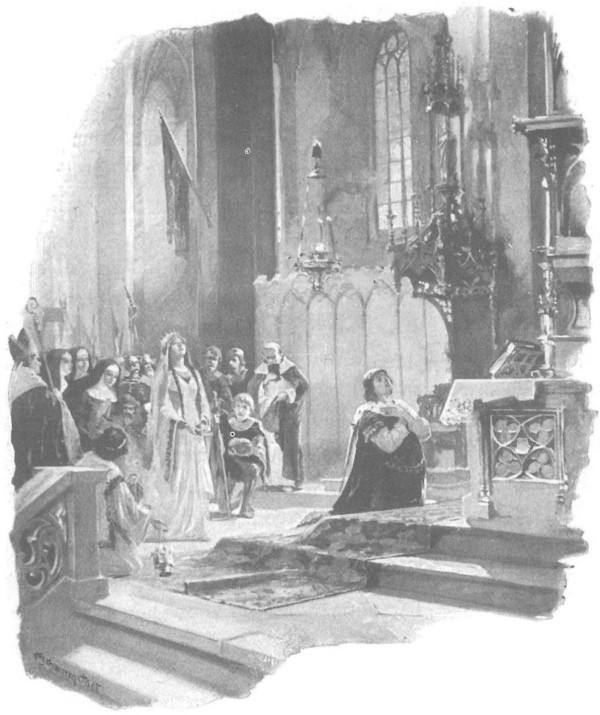

Hôm sau, cả hai hiệp sĩ trang Bogdaniec cùng hiệp sĩ Powała tới nhà thờ dự giờ kinh sáng, phần để cầu nguyện, phần để được ngắm nghía đám tân khách và triều thần tụ tập nhau trước khi vào cung. Dọc đường, hiệp sĩ Powała gặp khá nhiều người quen, trong đó có những trang hiệp sĩ lẫy lừng danh tiếng khắp trong và ngoài nước, Zbyszko tròn mắt ngắm họ, lòng thầm hứa nếu chuyện đụng độ với Lichtenstein được xuôi chèo mát mái thì thế nào chàng cũng quyết vươn lên sánh bằng họ về sự uy dũng và các phẩm hạnh hiệp sĩ khác mới cam. Hiệp sĩ Toporczyk [86] , một người có họ với viên trấn thành Kraków [87] , kể lại chuyện cha Wojciech Jastrzębiec [88] vừa từ Roma trở về sau khi mang tín thư của đức vua sang gặp Giáo hoàng Roma Bonifacy IX mời Đức Giáo hoàng sang dự lễ rửa tội. Đức Giáo hoàng đã nhận lời mời, tuy cũng bày tỏ nỗi e ngại không hiểu có đích thân sang dự được không. Người đã ủy thác cho một thánh sứ nhân danh Giáo hoàng đến và lưu lại kinh thành Kraków cho đến lúc làm lễ rửa tội cho ấu chúa sắp chào đời, đồng thời người cũng đề nghị cho ấu chúa được mang tên thánh là Bonifacy hay Bonifacja, để minh chứng cho tình yêu mến đặc biệt của người đối với đức vua và hoàng hậu.
Người ta kháo nhau về chuyến viếng thăm sắp tới của vua Hungary Zygmunt, họ tin chắc thể nào cũng được gặp nhà vua lần này, bởi lẽ dầu có được mời hay không thì vua Zygmunt bao giờ cũng có mặt mỗi khi có dịp được thăm viếng, tiệc tùng hay hội võ - những cuộc vui mà nhà vua rất thích tham dự, bởi ngài khao khát được nức tiếng thế gian là một vị quân vương kiêm ca sĩ và hiệp sĩ uy vũ hàng đầu. Các hiệp sĩ Powała, Zawisza xứ Garbów, Dobko xứ Oleśnica, Naszan và những trang hiệp khách tầm cỡ khác đều cười khi nhắc lại chuyện hồi nào vì có mặt vua Zygmunt mà đức vua Władysław đã phải nhắc khẽ họ là khi thi đấu chớ có quá mạnh tay mà phải nương nhẹ cho “vị thượng khách người Hung”, người nổi tiếng vì tính hiếu thắng phù phiếm, đến mức nếu thua kém là ứa nước mắt khóc liền.
Nhưng việc khiến giới hiệp sĩ quan tâm nhất là chuyện đại quận công Witold. Người ta đồn đại biết bao điều kỳ diệu về sự tuyệt vời của chiếc nôi đúc bằng bạc ròng - tặng vật mà các hiệp khách và tráng sĩ Litva mang về đây tặng ấu chúa thay mặt cho đại quận công Witold và nàng Anna vợ ông [89] . Những người tụ tập như thường lệ trước giờ kinh sáng kể cho nhau nghe biết bao chuyện mới mẻ. Trong đám người ấy, khi nghe bàn tán về chiếc nôi, ông Maćko cũng lên tiếng tham gia, mô tả tỉ mỉ sự quý giá của món quà tặng ấy. Nhưng ông nói nhiều hơn về cuộc viễn chinh mà đại quận công Witold dự định tiến hành để chống bọn rợ Tatar khi được người ta hỏi về chuyện ấy. Cuộc viễn chinh hầu như đã được chuẩn bị sẵn sàng cả rồi, những đạo quân đông đảo đã lên đường tiến sang miền Đông Nga.
Nếu cuộc chiến này thành công, thì miền đất do đức vua Jagiełło trị vì sẽ trải dài cả nửa phần thế giới, đến những miền đất bí ẩn chưa từng được biết đến ở Á châu, đến tận biên giới Ba Tư và bờ biển Aran [90] . Ông Maćko là người từng thân cận, nắm được những ý định của Witold, lại biết thuật chính xác và hấp dẫn đến nỗi trước khi nhà thờ thỉnh chuông gọi giờ kinh sớm, bên những bậc thềm của nhà thờ đã có một đám đông háo hức vây quanh ông.
- Đây là một cuộc thập tự chinh vì danh Chúa. - Ông nói. - Đại quận công Witold, dẫu được người đời ngợi ca là một vị quân vương vĩ đại, thực ra cũng chỉ là người cai quản đất Litva theo lệnh đức vua Jagiełło, chỉ là một vị vương thừa hành ý chỉ của đức vua ta mà thôi. Cho nên công tích chính vẫn là của đức vua. Sẽ hiển vinh biết bao cho đại công quốc Litva vừa được rửa tội, cho sự hùng cường của Ba Lan, nếu liên quân hai nước dựng được thánh giá tại những miền mà từ trước đến nay nếu người ta có nhắc đến tên Chúa Cứu Thế thì chỉ là để phỉ nguyền, những miền mà cho tới nay chưa hề có bàn chân người Ba Lan hay Litva nào đặt tới. Vua Tochtamysz [91] bị xua đuổi nếu được liên quân Ba Lan và Litva đưa trở lại ngai vàng Kipczak [92] sẽ tự nguyện thừa nhận là “thần tử” của đức vua Władysław và hứa rằng sẽ cùng toàn thể chúng dân Trại Vàng chịu quy phục thánh giá.
Người ta lắng nghe lời ông nói, nhưng đa số thực ra không hiểu thật rõ sự tình là thế nào, đại quận công Witold phải giúp ai, ngài đấy quân chống lại ai. Vì vậy, một số người cất tiếng hỏi lại ông:
- Xin ngài hãy nói rõ hơn xem đánh nhau với ai vậy?
- Với ai ư? Với chính Tymur Thọt [93] đấy! - Ông Maćko đáp.
Im lặng bao trùm. Quả thực, dẫu đã bao lần những cái tên vương quốc Trại Vàng, Trại Xám, Trại Azop và đủ mọi thứ vương quốc Nguyên Mông khác vang đến tai giới hiệp sĩ phương Tây, nhưng họ không thạo chuyện dân Tatar và những cuộc nội chiến huynh đệ tương tàn giữa các vương quốc ấy với nhau. Song khắp châu Âu có lẽ sẽ không tìm nổi một kẻ nào không biết danh tiếng Tymur Thọt, tức Tamerlan Bạo Chúa, cái tên mà mỗi khi nghe đến, người ta cảm thấy hãi hùng không kém tên tuổi của bạo chúa Attyla [94] xưa kia. Đó quả là vị “chúa tể” của thế gian, “chủ nhân” của mọi thời đại, kẻ thống trị hai mươi bảy vương quốc đã bị hắn chinh phục, chúa tể của vùng đất Nga thuộc Moskva, chúa tể vùng Sibir, cả Trung Hoa, Ấn Độ, lẫn Bagdad, Ispahan, Aleppu, Damaszk, kẻ mà bóng đen trùm lên cả vùng cát trắng của sa mạc Ả Rập, che phủ kín đất Ai Cập và vượt qua eo biển Bosphor de dọa cả vương quốc Hy Lạp, một kẻ tận diệt loài người, một con quỷ chuyên dựng nên những kim tự tháp bằng xương sọ người, kẻ đã thắng mọi cuộc chiến tranh, vị “chúa tể cả linh hồn lẫn thể xác” của người đời, chưa từng biết thế nào là thua trận.
Tochtamysz được hắn đặt lên ngai vàng của vương quốc Trại Vàng và Trại Xám, và được gọi là “thần tử”. Nhưng khi vùng đất do y cai quản đã trải dài từ biển Aran đến tận Krym, đã rộng hơn đất của toàn bộ phần châu Âu còn lại, kẻ “thần tử” lại muốn trở thành một vị chúa tể độc lập - ý tưởng mà chỉ cần dùng một ngón tay, người “cha” khủng khiếp kia đã khiến cho y bay mất ngai vàng, phải chạy sang nhờ đại quận công xứ Litva cứu giúp. Chính y là người đại quận công Witold định đưa về nước. Nhưng muốn thế, trước tiên phải đọ sức với vị chúa tể Thọt của thế gian đã.
Tên của Tymur Thọt đã gây cho mọi người ấn tượng rất mạnh. Sau hồi lâu im lặng, một trong những vị hiệp sĩ tuổi tác nhất, ông Wojciech xứ Jaglowo, lên tiếng:
- Việc này động đến một kẻ chẳng vừa đâu.
- Mà lại dính đến một chuyện quá ư vớ vẩn. - Hiệp sĩ Mikołaj xứ Dlugolas sáng suốt lên tiếng. - Đã ở cách xa ta mười tổng, thì dù gã Tochtamysz hay một thằng Kutluk [95] cha căng chú kiết nào đó cai trị lũ con cháu của quỷ dữ chăng nữa, cũng có can hệ gì đến chúng ta?
- Tochtamysz có thể sẽ chịu quy thuận đạo Ki-tô. - Ông Maćko đáp.
- Có thể quy thuận mà cũng có thể không. Sao ta lại có thể tin lời lũ chó vô đạo đã không chịu tôn thờ Đức Chúa Ki-tô kia chứ?
- Nhưng vì sự nghiệp sáng danh của Ki-tô thì thà có chết cũng cam lòng! - Hiệp sĩ Powała lên tiếng.
- Vì danh dự hiệp sĩ nữa chứ! - Hiệp sĩ Toporczyk, một người có họ với viên trấn thành, nói thêm. - Trong đám chúng ta đây, nào thiếu gì những người sẵn sàng ra đi vì nghĩa lớn. Hiệp sĩ Spytko xứ Melsztyn tuy có người vợ trẻ rất yêu chiều, nhưng cũng đã đến với đại quận công Witold rồi đấy.
- Bởi cũng chẳng có gì lạ, - hiệp sĩ Jaśko xứ Naszan cắt ngang, - dầu linh hồn anh có mang trọng tội nặng nề nhất đi nữa, thì sau cuộc chiến tranh này, chắc chắn anh vẫn được giải tội để siêu thoát kia mà. [96]
- Và còn được sáng danh đời đời nữa chứ. - Hiệp sĩ Powała xứ Taczew lại nói tiếp. - Chiến tranh nào chẳng là chiến tranh. Được đánh nhau với những tay không vừa lại càng hay chứ sao. Tymur đã đánh chiếm cả thế gian, hắn có cả thảy hai mươi bảy vương quốc chư hầu dưới tay. Sẽ vinh quang biết bao cho dân tộc ta nếu đánh được hắn.
- Sao lại không thắng? - Hiệp sĩ Toporczyk tiếp lời. - Dẫu hắn có trong tay cả trăm vương quốc đi nữa, dẫu ai sợ hắn mặc lòng, chứ chúng ta thì không! Ông nói phải lắm! Hãy kêu gọi chừng mười ngàn tay thiết kỵ trường thương giỏi giang, chúng ta sẽ băng qua khắp thế gian cho xem!
- Dân tộc nào sẽ chinh phục nổi thằng Thọt nếu không phải là dân tộc ta?…
Các vị hiệp sĩ cứ thế bàn nhau, khiến Zbyszko đâm ngạc nhiên tự hỏi tại sao từ trước, chưa bao giờ chàng khao khát được cùng đại quận công Witold tiến quân vào những miền thảo nguyên hoang đã kia… Hồi ở thành Wilno, chàng chỉ muốn được đến kinh thành Kraków, được thấy triều đình, được đua tài trong các cuộc đấu, còn bây giờ chàng nghĩ rằng nơi đây chỉ có thể mang lại cho chàng niềm tủi hổ và bản án, trong khi nơi kia nếu tồi tệ nhất cũng mang đến cho chàng cái chết đầy vinh quang và ngợi ca…
Nhưng Wojciech, vị hiệp sĩ trăm tuổi xứ Jaglowo, cổ đã run rẩy vì tuổi tác, nhưng trí óc thì vẫn rất minh mẫn, xứng đáng với tuổi thọ của mình - đã giội một gáo nước lạnh vào niềm hăng say của đám hiệp sĩ:
- Các anh dốt lắm! - Cụ bảo. - Thế ra trong các anh không ai nghe nói đến chuyện chính hình Đức Chúa Ki-tô trên bàn thờ đã cất lời trò chuyện với hoàng hậu của ta hay sao [97] ? Và một khi Đấng Cứu Thế đã thân mật với bà như thế thì lẽ đâu Đức Chúa Thánh Thần, ngôi thứ ba trong ba ngôi, lại kém phần ưu ái bà cho được? Cũng vì thế, hoàng hậu đã nhìn thấu suốt bao việc tương lai, như thể chúng diễn ra ngay trước mắt bà vậy, bà nói thế này…
Đến đây, cụ ngừng lời hồi lâu, đầu lúc lắc, mãi sau mới nói:
- Ta quên mất điều hoàng hậu nói rồi, nhưng chỉ lát nữa ta sẽ nhớ ra thôi.
Vị lão trượng cố căng óc nhớ lại, các hiệp sĩ chăm chú chờ, bởi lẽ người ta đồn rằng hoàng hậu là người thấy trước những điều hậu vận.
- A! - Mãi sau cụ mới thốt lên. - Ta nhớ ra rồi! Hoàng hậu bảo rằng giá như cả giới hiệp sĩ chốn đây cùng lên đường với đại quận công Witold đi đánh gã Thọt, thì bọn ngoại đạo sẽ bị tan tành. Nhưng không thể làm điều đó vì tính gian ngoan của các vua chúa theo Ki-tô giáo. Chúng ta còn phải canh giữ biên cương, đề phòng cả bọn Séc, bọn Hung lẫn bọn Thánh chiến, không thể tin được bất kỳ ai. Mà nếu như chỉ có một nhúm người Ba Lan đi với đại quận công Witold thì Tymur Thọt hoặc các viên thống đốc của y với hàng hà sa số quan hắc ám sẽ đánh bại họ ngay…
- Bây giờ đang buổi thanh bình, - hiệp sĩ Toporczyk thốt lên, - ngay cả quân Giáo đoàn hình như cũng đang đánh giúp cho đại quận công Witold kia mà. Vả lại, bọn Thánh chiến cũng không thể làm khác thế, dẫu chỉ vì hổ thẹn trước Đức Giáo hoàng, bởi chúng muốn tỏ cho ngài rằng chúng sẵn sàng đánh nhau chống lại bọn ngoại đạo. Nhiều vị triều thần bảo rằng gã Kuno Lichtenstein đến đây không chỉ để dự lễ hội mà còn để tham nghị cùng đức vua ta nữa đấy…
- Chính hắn kia kìa! - Ông Maćko ngạc nhiên kêu lên.
- Phải rồi! - Hiệp sĩ Powała ngoái nhìn rồi nói. - Lạy Chúa, chính hắn đấy! Hắn lưu lại chỗ đan viện phụ mới ngắn chứ! Chắc hắn rời Tyniec từ đêm qua.
- Hắn có vẻ vội vàng lắm hay sao ấy. - Ông Maćko rầu rĩ nói.
Kuno Lichtenstein lướt qua ngay cạnh họ. Ông Maćko nhận ra hắn qua hình thánh giá khâu bên ngoài áo choàng, còn hắn không nhận ra ông và Zbyszko vì hôm qua hắn chỉ thấy họ lúc họ đang đội mũ trụ, mà khi hiệp sĩ đang đội mũ chiến thì dầu có bỏ tấm che mặt đi, người ngoài cũng chỉ có thể nhìn thấy một phần nhỏ khuôn mặt mà thôi. Đi ngang qua, hắn gật đầu chào hiệp sĩ Powała xứ Taczew và hiệp sĩ Toporczyk, rồi cùng đám tùy tùng đặt chân bước lên những bậc thềm dẫn vào nhà thờ chánh xứ với những bước trang nghiêm, đường bệ.
Đúng lúc ấy, tiếng chuông vang lên báo hiệu giờ kinh sáng sắp bắt đầu, khiến những đàn quạ nhỏ và bồ câu làm tổ trong tháp chuông giật mình hoảng sợ. Ông Maćko cùng Zbyszko và mọi người bước vào nhà thờ, lòng thầm lo lắng bởi sự xuất hiện quá sớm của Lichtenstein. Vị hiệp sĩ lớn tuổi có phần lo lắng nhiều hơn, bởi lẽ tâm trí chàng hiệp sĩ trẻ lúc này đang bị cuốn hút bởi cảnh tượng các đình thần. Trong đời, chưa bao giờ Zbyszko được thấy tận mắt một thứ gì tuyệt vời như ngôi nhà thờ chánh xứ này cùng đám người tụ tập trong đó. Vây quanh chàng, cả bên trái lẫn bên phải đều là những con người danh tiếng nhất của vương quốc, lừng danh trong thương thuyết hay trong chiến trận. Tuy nhiều người đã qua đời trong số những bậc thông thái đã tác thành cuộc nhân duyên giữa đại quận công Litva với nữ vương xinh đẹp và trẻ trung của Ba Lan, nhưng nhiều vị vẫn còn sống, được mọi người ngưỡng mộ với lòng tôn kính khác thường. Chàng hiệp sĩ trẻ tuổi ngắm không chán mắt dung mạo tuyệt vời của hiệp sĩ Jaśko xứ Tęczyn, vị trấn thành Kraków, cái dung mạo hài hòa giữa vẻ khắc khổ và sự trang nghiêm đường bệ. Chàng thầm thán phục những vẻ mặt thông tuệ và bình tĩnh của các ủy viên hội đồng thành phố cùng vẻ tráng kiệt lẫm liệt uy nghi của các vị hiệp sĩ, với mái tóc trước trán thường được xén bằng bên trên hàng lông mày, hai bên đầu và sau lưng lại rủ thành những cuộn buông dài. Một vài người mang mao mạng trên tóc, số khác chỉ buộc những dải vải cho gọn. Khách khứa ngoại quốc, các sứ thần của hoàng đế Thánh chế La Mã, Séc, Hung và Áo cùng đoàn tùy tùng làm người ta ngạc nhiên bởi vẻ trang trọng khác vời của phục trang. Các quận công và tráng sĩ Litva trong đoàn ngự vệ - để cho thêm phần long trọng - vẫn khoác nguyên những chiếc áo dài lót lông thú quý, mặc dù bấy giờ đang giữa tiết hè nóng nực. Các quận công Nga, trong những chiếc áo dài cứng dơ, rộng xòe xoẹt, nổi bật trên nền các bức tường và những thứ đồ dát vàng choáng lộn của nhà thờ, nom hệt như những bức tranh Byzantine [98] . Song Zbyszko háo hức đón chờ nhất lúc đức vua và hoàng hậu xuất hiện. Chàng cố len để có thể đến thật gần hàng ghế đầu, phía trước đó, gần bàn thờ, có đặt hai chiếc gối bằng nhung đỏ, nơi vua và hoàng hậu thường quỳ khi nghe đọc kinh lễ misa. Chàng không phải đợi lâu: đức vua vào trước theo cửa ra vào phía phòng áo lễ. Trong lúc đức vua tiến lại phía bàn thờ, chàng có thể ngắm ngài rất rõ. Tóc ngài đen, hơi rối, đã thưa thớt phía trên trán, đằng sau xõa dài, hai bên thái dương được giắt vào sau vành tai. Mặt ngài ngăm ngăm, râu ria cạo nhẵn, sống mũi gồ, khá nhọn, bên mép có những nếp nhăn li ti, với đôi mắt đen, nhỏ, rất sáng, ánh mắt nhìn khắp mọi phía như thể ngài đang muốn điểm mặt những người đang ở trong nhà thờ trước khi đến quỳ trước bàn thờ Chúa, vẻ mặt ngài nhân hậu nhưng đầy cảnh giác, đó là vẻ mặt của một người gặp thời được đưa lên chỗ cao sang, vượt xa những điều mơ tưởng, buộc phải thường xuyên giữ gìn cho hành vi tương xứng với cương vị; vẻ mặt một người luôn luôn lo ngại đề phòng những lời chỉ trích ác ý. Cũng vì thế, nét mặt và cử chỉ của đức vua như luôn toát ra vẻ nóng nảy, sốt ruột. Dễ đoán được rằng những cơn nóng giận của ngài thường bùng ra đột ngột và khủng khiếp. Đức vua vẫn là vị đại quận công xưa kia, đã có lúc vì quá bực mình trước những hành động đểu giả của bọn Thánh chiến mà phải quát mắng đám sứ thần của Giáo đoàn: “Các ngươi mang thư viết trên giấy da cừu đến gặp ta, còn ta sẽ cầm giáo sang gặp các ngươi đấy!”
Nhưng lúc này, tính nóng nảy bẩm sinh bị lòng mộ đạo lớn lao và chân thành kiềm chế. Không riêng các quận công Litva vừa được cải đạo, ngay những vị vương hầu mộ đạo từ thời cụ kị ông bà cũng thêm kiên tín khi thấy đức vua cầu nguyện trong nhà thờ Chúa. Đức vua thường dẹp bỏ gối kê chân, quỳ ngay xuống sàn đá trần trụi để tăng thêm phần hành xác. Khi cầu nguyện, tay ngài thường giơ cao lên trời và cứ giữ nguyên như thế cho đến khi chúng tự đổ xuống vì quá mỏi. Ngày ngày, đức vua lắng nghe không dưới ba buổi lễ misa, chăm chú nuốt từng lời. Thời điểm mở li thánh tửu và tiếng chuông trầm bổng lúc thăng thiên bao giờ cũng khiến tâm hồn đức vua tràn ngập những cảm giác phấn hứng, thán phục, ngưỡng mộ và kính sợ sâu xa. Khi lễ misa kết thúc, đức vua bước ra khỏi nhà thờ như vừa tỉnh một giấc mơ êm ái hiền hòa, và đã từ lâu đám đình thần biết rằng đó là lúc dễ cầu xin ngài tha tội hoặc ân thưởng nhất.
Hoàng hậu Jadwiga cũng bước vào nhà thờ qua cửa phía phòng áo lễ. Trông thấy hoàng hậu, những vị hiệp sĩ đứng gần hàng ghế đầu hơn cả lập tức quỳ xuống, mặc dù lễ misa chưa bắt đầu, bất giác họ chào đón hoàng hậu như đón chào một nữ thánh. Zbyszko cũng vậy. Trong cả đám người tụ tập nơi đây, không có ai nghi ngờ rằng trước mặt họ không phải là một vị nữ thánh, mà về sau này, cùng với thời gian, hình ảnh của bà sẽ được dùng để tô điểm thêm cho bàn thờ Chúa. Nhất là từ vài năm gần đây, cuộc sống khổ hạnh chay tịnh theo kiểu hành xác khắc khổ của hoàng hậu Jadwiga đã khiến cho ngoài lòng tôn kính sẵn có đối với một vị đương kim hoàng hậu, người ta còn dành cho bà lòng sùng mộ gần như tôn giáo. Đám quan lại và chúng dân truyền tụng về những phép mầu mà hoàng hậu đã thực hiện. Người ta dồn rằng chỉ cần bà chạm tay vào người là chữa khỏi bệnh cho kẻ ốm, những ai teo liệt chân tay lại khỏe mạnh như thường sau khi khoác những tấm áo cũ của hoàng hậu. Nhiều nhân chứng đáng tin cam đoan rằng chính tai họ đã được nghe có lần Đức Chúa Ki-tô từ trên bàn thờ đã cất tiếng nói với hoàng hậu.
Các quận công ngoại quốc cũng phải quỳ xuống ngưỡng mộ bà, thậm chí các hiệp sĩ của Giáo đoàn Thánh chiến cứng lòng là thế cũng phải tôn kính, không hề dám xúc phạm hoàng hậu. Giáo hoàng Bonfinacy gọi bà là thánh hậu và là con gái yêu của Giáo hội. Cả thế gian luôn dõi theo mọi hành động của bà và luôn nhớ rằng bà là con đẻ của cả dòng họ Andegawenski [99] lẫn dòng họ Piast [100] của Ba Lan, rằng bà là con gái của vua Ludwik hùng cường [101] , đứa trẻ yêu quý của chốn cung đình cao sang nhất, và sau rốt - bà là nàng công chúa xinh đẹp nhất trong số các trinh nữ trên trái đất đã dám khước từ hạnh phúc riêng tư, khước từ tình yêu trinh nữ đầu tiên [102] của mình để trở thành hoàng hậu của một vị quận công “man di” xứ Litva, cùng với ông đưa dân tộc ngoại đạo cuối cùng của châu Âu quỳ xuống dưới chân thánh giá. Điều mà sức mạnh của cả dân Đức, thế lực của Giáo đoàn Thánh chiến, những cuộc thập tự chinh và cả biển máu đã đổ ra không làm được, thì chỉ cần một lời nói của bà là xong. Chưa bao giờ vinh quang của bậc sứ đồ lại soi sáng một vầng trán trẻ trung và xinh đẹp nhường ấy, chưa bao giờ sứ mệnh của thánh tông đồ gắn liền với sự hy sinh lớn lao nhường ấy, chưa bao giờ vẻ đẹp trinh nữ lại chói ngời rực rỡ bởi một tấm lòng nhân hậu thiên thần cùng một nỗi u hoài hiền dịu nhường kia. Bao ca công lang thang từng cất tiếng hát ngợi ca hoàng hậu khắp các triều đình châu Âu. Bao hiệp sĩ từ những miền đất xa xôi nhất tụ hội về kinh thành Kraków để được thấy mặt vị hoàng hậu của dân tộc Ba Lan. Dân tộc đã sản sinh ra hoàng hậu yêu quý nâng niu bà như giữ gìn con ngươi mắt, bởi thông qua mối lương duyên với vua Jagiełło, hoàng hậu đã nhân lên gấp bao lần sự hùng mạnh và áng vinh quang của dân tộc ấy. Duy chỉ có một điều lo âu lớn đè nặng lên hoàng hậu và toàn dân - đó là việc suốt nhiều tháng năm dài, Đức Chúa vẫn chưa chịu ban cho đứa con yêu quý của Người niềm hạnh phúc được có kẻ nối dõi.
Nhưng rốt cuộc, khi nỗi bất hạnh kia qua đi thì tin vui về ơn Thiên Chúa đã như tia chớp lan nhanh khắp từ biển Baltic đến Biển Đen, lan sang tận bên kia dãy Carpat, làm hởi lòng hởi dạ toàn thể thần dân của quốc gia khổng lồ này. Trừ kinh đô của Giáo đoàn Thánh chiến ra, còn hầu khắp các triều đình ngoại quốc đều vui mừng, ở Roma, người ta hát bài kinh đầu Te Deum [103] mừng bà. Trên đất Ba Lan này, mọi người đều tin chắc một điều là nếu như thánh hậu đã cầu xin Đức Chúa điều gì thì điều đó nhất định sẽ xảy đến, không thể khác được.
Vì vậy, người ta thường xin vào bệ kiến hoàng hậu để cầu xin bà ban cho sức khỏe. Tín sứ từ các tổng và trấn [104] xa xôi đến gặp bà để xin bà cầu nguyện Chúa ban cho mưa, cho nắng, an hòa cho mùa màng, cầu mùa ngũ cốc bội thu, cho mùa mật ong tràn trề, cho cá đầy hồ, cho thú đầy rừng. Những trang hiệp sĩ lục lâm hung bạo từ các đồn và thành quách miền biên ải từng học theo phong tục của bọn Đức làm nghề lạc thảo, hoặc thường xuyên khởi chiến lẫn nhau, cũng chịu tuân theo lời nhắn nhủ của hoàng hậu mà đút kiếm vào bao, thả tù binh không cần đòi tiền chuộc mạng, hoàn lại những đàn súc vật đã cướp được rồi chìa tay cho nhau cùng cam kết sống thuận hòa. Mọi niềm bất hạnh tai ương, mọi nỗi nghèo hèn khốn khó đều chen nhau tìm đến cổng cung điện Kraków. Linh hồn thanh khiết của bà thấm sâu vào tâm can con người, làm dịu bớt kiếp đời nô lệ, bớt đi lòng kiêu hãnh của các ông chủ và sự hà khắc của đám quan tòa; nó dâng lên như ánh bình minh hạnh phúc, như thiên sứ của công lý và an bình trên khắp đất nước.
Vì vậy, toàn thể dân chúng đều hồi hộp đón chờ ngày ơn trên giáng phúc lành.
Các hiệp sĩ chăm chú ngắm dáng vóc của hoàng hậu để đoán xem họ còn phải chờ đợi hoàng tử hay công chúa nối dõi ngai vàng chừng bao lâu nữa. Ngài Wysz, giám mục Kraków, đồng thời cũng là vị y sư thông thái nhất cả nước và nức tiếng cả ở nước ngoài, chưa dự báo ngày sinh hạ sắp kề, nhưng người ta vẫn tiến hành những việc chuẩn bị theo tinh thần của phong tục tự ngàn xưa: mọi thứ lễ lạt được tiến hành càng sớm càng hay, và họ cứ duy trì những lễ lạt ấy suốt nhiều tuần liền. Hình dáng của hoàng hậu - tuy đã hơi nhô về phía trước - vẫn giữ được dáng thon thả bẩm sinh. Trang phục của bà thật quá ư giản dị. Trước kia, được nuôi dạy trong triều đình cao quý nhất, lại là người xinh đẹp nhất trong các công chúa đương thời, hoàng hậu Jadwiga đã có hồi từng say mê những thứ tơ lụa đắt tiền, những dây chuyền vàng, những ngọc ngà châu báu, những vòng và nhẫn. Nhưng giờ đây, đã vài năm rồi, hoàng hậu không chỉ toàn mặc áo dài của tu nữ mà thậm chí còn che bớt dung nhan, bởi e sự ý thức về sắc đẹp của bản thân có thể làm dậy lại trong lòng bà những ham muốn đời phàm. Trong niềm phấn hứng cao độ khi được biết hoàng hậu đã có mang, đức vua Jagiełło đã ra lệnh trải vải dát vàng lên long sàng, lại phủ thêm thứ vải bisior cực kỳ quý giá cùng những ngọc ngà châu báu điểm tô thêm, nhưng bà không ưng thuận. Hoàng hậu bảo rằng đã từ lâu bà từ bỏ sự giàu sang phú quý, bà vẫn luôn nhớ rằng lúc sinh nở nhiều khi cũng đồng thời là buổi lâm chung, vì vậy không nên đón nhận ân huệ được Chúa ban cho trong ngọc ngà châu báu mà nên ẩn mình trong niềm nhẫn nhục lặng thầm. Còn bạc vàng châu báu thì nên để dành cho Viện đại học [105] hoặc để gửi những thanh niên Litva vừa được cải đạo đến các trường đại học ở ngoại quốc thì hơn. [106]
Kể từ khi niềm hy vọng được làm mẹ trở thành một điều hoàn toàn chắc chắn, hoàng hậu chỉ chấp nhận một thay đổi duy nhất về hình thức chay tịnh tu hành - đó là không che mặt nữa, bởi bà quan niệm rất đúng rằng từ lúc ấy trở đi, bộ áo nữ tu không còn hợp với bà…
Mọi ánh mắt chan chứa niềm kính yêu lúc này đều hội tụ ở nét mặt diễm kiều mà không một thứ vàng bạc hay đá quý nào có thể xứng đáng được làm đồ trang sức. Hoàng hậu thong thả đi từ cửa phòng áo lễ tới bàn thờ chính, mắt ngước nhìn lên, một tay cầm sách kinh, tay kia cầm tràng hạt. Zbyszko nhìn thấy một khuôn mặt như đóa huệ, đôi mắt thanh thiên, những đường nét thuần khiết vẻ thiên thần, đầy an bình, nhân hậu, từ thiện, và trái tim chàng chợt đập dồn dập. Chàng hiểu rất rõ rằng theo lời răn của Chúa, chàng phải yêu kính cả đức vua và hoàng hậu, và chàng đã kính yêu theo cách của mình. Nhưng lúc này đây, trái tim chàng sôi sục bởi một tình yêu lớn lao ùa tới đột ngột, tình yêu không nảy sinh từ lời răn của Chúa mà tự sinh như ngọn lửa cháy bỏng, được hun đúc bằng cả lòng thành kính lớn lao, cả niềm kính sợ và lòng ham muốn tận hiến, muốn được hy sinh. Là một hiệp sĩ trẻ tuổi sục sôi nhiệt huyết, chàng những muốn được thể hiện ngay lập tức tình yêu mến và lòng trung thành của một hiệp sĩ tận hiến, chàng muốn thực hiện ngay một việc gì đó vì hoàng hậu, muốn được cất mình lên bay ngay đến một nơi xa xôi nào đó, muốn tóm cổ ngay một kẻ thù nào đó, muốn đoạt ngay một món chiến lợi phẩm nào đó, dù phải chịu rơi đầu. “Có lẽ ta phải lên đường cùng đại quận công Witold thôi”, chàng tự nhủ, “bởi làm sao có thể phục vụ thánh hậu nếu ta không cận kề chuyện chiến chinh?” Chàng không nghĩ ra cách phụng sự nào khác hơn là sử dụng thanh gươm, ngọn thương hoặc lưỡi rìu, chàng sẵn sàng đơn thương độc mã tấn công thẳng vào quân của bạo chúa Tymur Thọt. Chàng những muốn lập tức ngay sau lễ misa này, được nhảy lên lưng ngựa, bắt tay vào một việc gì đó. Nhưng việc gì? Chàng không rõ. Chỉ biết là không thể nào kìm lòng nổi, chỉ biết đôi tay chàng và cả tâm hồn chàng đang cháy bỏng sục sôi…

Hoàng hậu ngước mắt nhìn lên bàn thờ chính
Chàng hoàn toàn quên bẵng nỗi nguy đang rình rập. Thậm chí, trong một thoáng, chàng quên cả Danusia. Và lúc nàng trở lại với tâm trí chàng khi chàng chợt nghe những giọng hát trẻ thơ vang lên trong nhà thờ, thì chàng chợt nghĩ rằng đó là một chuyện khác hẳn. Chàng đã nguyện trung thành với Danusia, chàng đã thề vì nàng sẽ hạ ba thằng giặc Đức, và chàng sẽ giữ lời thề nguyện ấy. Nhưng dẫu sao hoàng hậu vẫn là người phụ nữ cao quý hơn tất thảy. Và khi chợt nghĩ đến số lượng kẻ thù mà chàng sẵn sàng tiêu diệt vì hoàng hậu, trước mắt chàng như hiện ra hằng hà sa số những giáp phục, những mũ trụ, những ngù lông đà điểu cùng lông công, và chàng cảm thấy rằng so với lòng khát khao thì ngần ấy vẫn còn quá ít..
Trong khi ấy, không hề rời mắt khỏi hoàng hậu, với tâm hồn trào dâng, chàng suy nghĩ lao lung xem nên dành cho bà lời cầu nguyện nào, bởi chàng nghĩ không thể dùng lời thường tình nguyện cầu cho thánh hậu. Chàng biết đọc câu kinh “Pater noster, qui es in coelis, sanctificetur nomen Tuum” [107] mà chàng được một thầy tu dòng Franciszkan ở Wilno dạy cho, nhưng có thể do vị tu sĩ ấy không thuộc trọn bài kinh, cũng có thể do chàng quên mất đoạn sau, chỉ biết rằng chàng không thể đọc trọn bài “ Lạy Cha”. Thế là chàng bèn nhẩm đi nhẩm lại chỉ những lời kinh ấy, những lời mà trong tâm chàng mang ý nghĩa: “Xin Đức Chúa hãy ban cho hoàng hậu kính yêu sức khỏe, sự sống và hạnh phúc, xin Người hãy chăm lo cho hoàng hậu hơn mọi kẻ khác. Kẻ khấn những lời cầu nguyện đó là một người đang bị bản án và hình phạt treo lơ lửng trên đầu, nên chắc chắn trong cả nhà thờ, không một lời cầu nguyện nào thành tâm hơn thế…
Sau khi lễ misa kết thúc, Zbyszko nghĩ rằng nếu được phép ra mắt hoàng hậu, được khấu đầu dập trán trước bà và ôm lấy chân bà, thì chàng vẫn cam lòng dẫu ngày tận thế có đến ngay chăng nữa. Nhưng sau lễ misa thứ nhất lại tiếp đến lễ thứ hai rồi thứ ba. Sau đó, hoàng hậu dời gót về phòng riêng, bởi hằng ngày bà thường nhịn ăn đến tận trưa và cố ý không tham gia những bữa sáng vui vẻ, nơi có lũ hề và các nhà ảo thuật làm vui cho đức vua cùng triều thần. Trước mặt Zbyszko chợt xuất hiện vị hiệp sĩ lớn tuổi xứ Dlugolas, ông mời chàng vào gặp quận chúa.
- Ngươi sẽ phục vụ cho ta và Danusia trong bữa sáng với tư cách đình thần của ta. - Quận chúa truyền. - Biết đâu ngươi chẳng có dịp may mắn được làm đẹp lòng vương thượng bằng một câu đùa hay một việc làm nào đó. Mà nếu gã hiệp sĩ Thánh chiến có nhận ra ngươi thì hắn cũng chẳng thể kêu ca gì được khi thấy ngươi đang phục dịch cho ta ngay trên bàn tiệc của chúa thượng.
Zbyszko bèn hôn tay quận chúa, rồi chàng quay sang Danusia và mặc dầu vốn quen với chiến chinh cùng chuyện đấu sức đua tài hơn các phong tục cung đình, chàng vẫn hiểu rõ vào buổi sáng sớm, một hiệp sĩ mã thượng phong lưu cần phải đối xử thế nào với nữ chúa của lòng mình. Chàng bèn bước lui, mặt làm ra vẻ kinh ngạc, rồi vừa làm đấu thánh vừa thốt lên:
- Nhân danh Cha, Con và Thánh Thần!…
Danusia ngước đôi mắt xanh thẳm lên nhìn chàng mà hỏi:
- Sao anh Zbyszko còn làm dấu thánh sau lễ misa thế?
- Bởi lẽ mới sau một đêm mà tiểu thư đã xinh đẹp ra biết bao, thưa tiểu thư tuyệt thế giai nhân, nàng khiến tôi phải sững sờ!
Là một người tuổi tác, hiệp sĩ Mikołaj xứ Dlugolas không ưa những phong tục của giới hiệp sĩ mới du nhập từ nước ngoài, nên ông nhún vai thốt lên:
- Anh chỉ phí thì giờ vô ích ca ngợi sắc đẹp của con bé. Nó là một con nhóc mới cao hơn mặt đất tí chút chứ mấy!
Nghe thấy thế, Zbyszko trừng mắt nhìn ông:
- Ngài thật điên rồ khi dám gọi tiểu thư đây là con nhóc. - Chàng thốt lên, mặt tái nhợt vì tức giận. - Nên biết rằng nếu ngài ít tuổi hơn chút nữa thì tôi sẽ bảo chọn ngay một khoảnh đất trong cung điện này để đón cái chết của ngài hoặc cái chết của tôi!…
- Câm đi, đồ nhóc con!… Ngay ngày hôm nay, ta sẽ cho nhà ngươi biết tay ta!
- Ngươi im đi! - Quận chúa nhắc lại. - Thì ra, thay vì cố nghĩ cách tự cứu cái đầu của mình, ngươi lại muốn gây sự ở đây nữa hả? Ta chỉ muốn tìm ngay một hiệp sĩ chín chắn hơn cho Danusia. Bảo cho ngươi biết, nếu muốn gây chuyện lộn xộn, hãy xéo đi đâu tùy ý, ở đây không cần hạng người ấy đâu…
Zbyszko xấu hổ vì những lời quát mắng của quận chúa và đã xin bà thứ lỗi. Nhưng lòng chàng vẫn hậm hực nghĩ rằng nếu ông Mikołaj xứ Dlugolas có con trai lớn, thì nhất định sẽ có lúc chàng thách đấu với con trai ông, trên bộ hoặc trên ngựa, chứ nhất quyết không thể bỏ qua câu gọi “con nhóc” kia của bố hắn được. Tuy vậy, chàng cũng tự nhủ rằng trong cung điện, nên dùng cách xử sự của loài đà điểu, tránh không nên thách đấu với ai, trừ phi danh dự hiệp sĩ nhất thiết đòi hỏi thì không kể…
Tiếng kèn đồng vang động báo hiệu bữa tiệc sáng đã sẵn sàng, quận chúa Anna nắm tay Danusia dắt vào cung vua, trước cửa hoàng cung là các quan chức cao cấp và giới hiệp sĩ đang đứng đợi chào bà. Quận chúa Ziemowitowa đã vào trước, vì với tư cách hoàng muội của đức vua, bà được ngồi chỗ cao sang hơn trong bàn tiệc. Trong phòng tiệc có mặt đông đảo khách khứa nước ngoài cùng quan lại và hiệp sĩ trong nước. Đức vua ngồi ở phía đầu bàn cao hơn, hai bên là đức giám mục Kraków và ông Wojciech Jastrzębiec, người tuy có chức thánh thấp hơn các tăng lữ khác thuộc hàng giám mục nhưng vẫn được ngồi bên phải đức vua với tư cách đặc sứ của Giáo hoàng. Hai vị quận chúa ngồi ở những ghế tiếp theo. Sau quận chúa Anna Danuta, ngồi ngả lưng thoải mái trên một chiếc ghế tựa có lưng rộng là cha Jan, cựu tổng giám mục Gniezno, vị quận công dòng họ Piast vùng Śląsk, con trai của quận công Bolek III vùng Opole. Hồi còn ở triều đình đại quận công Witold, Zbyszko đã từng được nghe danh ông ta, nên lúc này đứng hầu sau lưng quận chúa và Danusia, chàng nhận ngay ra ông qua mái tóc rất rậm được bện thành từng túm thắt đoạn, khiến đầu ông ta nom giống một bình vẩy nước thánh ở nhà thờ. ở các cung đình vương hầu Ba Lan, người ta cũng thường gọi ông là Bình Nước Thánh, ngay cả bọn hiệp sĩ Thánh chiến cũng gọi ông bằng cái tên lơ lớ “Bìn Nước Than” [108] . Đó là một người nổi tiếng về tính quấy tếu và thói trăng hoa. Trái với ý muốn đức vua, được nhận dải băng tổng giám mục Gniezno, ông ta những muốn dùng vũ lực đoạt luôn xứ đó, vì thế đã bị cách chức và đuổi cổ đi. Ông bèn liên minh với quân Thánh chiến, được bọn chúng thí cho cai quản xứ đạo Kamienski nghèo rớt mùng tơi ở vùng Pomorze. Đến lúc đó, ông ta mới hiểu ra rằng tốt nhất nên hòa thuận với vị vua hùng cường. Ông bèn lạy lục đức vua, xin quay trở về đất nước, cố chờ đợi một ghế khuyết nào đó trong các thủ phủ, hy vọng sẽ được chúa thượng khoan hậu ban cho. Quả thực về sau, ông không đến nỗi phải thất vọng. Lúc này, ông ta đang cố dùng những lời vui đùa đường mật lấy lòng đức vua. Tuy nhiên, sức hút xưa cũ bao giờ cũng lôi ông ta xích lại gần bọn hiệp sĩ Thánh chiến. Ngay tại đây, trong cung vua Jagiełło, bởi không được đám quần thần và giới hiệp sĩ yêu thích, ông bèn phải bấu víu vào tình quen biết bạn bè của gã Lichtenstein và rất lấy làm hài lòng được ngồi cạnh gã trên bàn tiệc.
Đứng sau lưng ghế quận chúa, Zbyszko ở gần tên hiệp sĩ Thánh chiến đến nỗi chàng có thể chạm tay vào người hắn. Tay chàng chợt nổi cơn ngứa ngáy, cứ chực cuộn chặt lại thành nắm đấm, nhưng đó chỉ là phản xạ vô thức mà thôi. Chàng đã cố kiềm tính nóng nảy của bản thân, không cho phép được nảy ra một ý nghĩ nào đáng chê trách. Song chàng vẫn không sao chế ngự nổi, thỉnh thoảng ném những ánh mắt đầy thèm muốn về phía cái sọ phủ tóc hoe hoe đã hơi hói của Lichtenstein, ngắm chiếc cổ, tấm lưng và đôi vai của hắn, dường như muốn đo tính trước xem sẽ phải vất vả lắm không nếu được đấu với hắn trong chiến trận hoặc một cuộc tỷ thí tay đôi. Chàng nghĩ ràng có lẽ sẽ chẳng vất vả gì lắm, bởi mặc dầu xương vai của gã Thánh chiến ấy nổi hằn lên khá đồ sộ dưới tấm áo khoác bằng dạ xám mỏng bó khít người, nhưng hắn cũng chỉ là một kẻ èo ợt ẻo lả so với những thân hình tráng kiện của hiệp sĩ Powała, của ông Paszko Đạo Chích xứ Biskupice, của hai anh em dũng sĩ mang gia huy Sulima lừng danh [109] , của ông Krzon xứ Kozieglowy [110] , hay so với bao nhiêu tíang hiệp sĩ anh tuấn khác đang được đức vua ban tiệc.
Zbyszko ngắm nhìn họ với nỗi thán phục, lòng thầm ghen tị. Song chàng chú ý nhất đến đức vua, người đang đưa mắt nhìn tứ phía, chốc chốc lại đưa mấy ngón tay vén tóc ra sau vành tai, dường như đang sốt ruột vì bữa sáng mãi chưa bắt đầu. Ánh mắt của đức vua dừng lại ở Zbyszko trong một thoáng, chàng hiệp sĩ trẻ tuổi chợt cảm thấy hãi hùng, và khi nghĩ ràng mình phải đứng cúi đầu trước bộ mặt tức giận của đức vua, chàng lo lắng quá đỗi. Đó là lần đầu tiên chàng thật sự suy nghĩ về trách nhiệm và hình phạt có thể giáng xuống đầu mình, bởi lẽ cho đến bây giờ, chàng vẫn ngờ rằng đó là những chuyện xa xôi, không rõ nét, chẳng cần bận tâm đến làm gì!
Gã hiệp sĩ người Đức hoàn toàn không ngờ là chàng trai đã từng cả gan tấn công mình trên đường cái quan lại đang có mặt ở gần đến thế. Bữa sáng bắt đầu. Mọi người đều nâng cốc, loại rượu nho đã được cho thêm trứng, quế, hạt cẩm quỳ, gừng và huệ tây, mùi thơm nồng nàn tỏa sực nức khắp phòng. Anh hề Ciaruszek ngồi giữa khung cửa trên một chiếc ghế gỗ thô kệch cất tiếng giả tiếng chim họa mi hót khiến đức vua rất đỗi thích thú. Tiếp đó, một anh hề khác theo đám gia nhân mang món ăn đi vòng quanh bàn tiệc, khẽ đứng lại đằng sau lưng thực khách, giả làm tiếng ong vo ve bay gần, giống đến nỗi vài người phải buông thìa xuống mà huơ huơ tay lên đầu xua đuổi. Cảnh tượng ấy khiến những người khác phá lên cười. Zbyszko chăm chú phục dịch quận chúa và Danusia, nhưng khi thấy Lichtenstein cũng đang huơ tay vỗ vỗ chiếc đầu hói, thì chàng quên hết cả nỗi hiểm nguy đang đe dọa mà cười chảy nước mắt.
Đứng gần chàng, vị quận công trẻ tuổi người Litva là Jamont, con trai của ngài phó vương vùng Smolensk [111] , cũng cười nhiều đến nỗi khiến thức ăn vung vãi cả.
Rốt cuộc, gã Thánh chiến cũng nhận ra là mình lầm. Hắn bèn vừa thò tay vào túi da lấy tiền vừa quay sang giám mục Bình Nước Thánh và nói với ông ta vài lời bằng tiếng Đức, được giám mục dịch ngay sang tiếng Ba Lan:
- Tôn ông đây bảo mày thế này! - Ông quay lại bảo anh hề. - Mày sẽ được thưởng hai đồng skojeq nhưng mày chớ dại mà vo ve gần quá, bởi ong mật thì người ta chỉ xua đuổi thôi, nhưng ong đực thì bị người ta đập chết tươi đấy…
Anh hề vừa đút tọt hai đồng skojec mà gã hiệp sĩ Thánh chiến vừa cho vào túi vừa lợi dụng quyền tự do của vai hề chuyên phục dịch góp vui trong triều, trả miếng ngay:
- Vùng đất Dobrzyń lắm mật nên lũ ong đực cứ bâu vào. Hỡi đức vua Władysław, hãy đập chết tươi chúng đi! [112]
- Vậy thì ta thưởng thêm cho mày một đồng grosz này nữa vì tài đối đáp, - giám mục Bình Nước Thánh nói, - có điều mày nên nhớ rằng dây thang mà đứt thì thợ ong cũng gãy cổ như chơi đấy. Đám ong đực thành Malborg đang ăn mật vùng Dobrzyń vốn mạnh ngòi châm lắm đấy, leo lên lưng chúng có ngày khốn thân!
- Ồ! - Hiệp sĩ Zyndram xứ Maszkowice, quan chưởng kiếm [113] vùng Kraków thốt lên. - Đuổi cổ chúng có gì là khó!
- Bằng cách nào vậy?
- Bằng thuốc súng! [114]
- Hoặc dùng rìu phăng cổ chúng đi! - Vị hiệp sĩ lực lưỡng xứ Biskupice là Paszko Đạo Chích tiếp lời.
Tim Zbyszko rộn lên, chàng nghĩ rằng những lời mạnh mẽ ấy báo hiệu cuộc chiến sắp bùng nổ, và Kuno Lichtenstein - kẻ từng sinh sống suốt một thời gian dài tại Toruń và Chełmno, hiểu tiếng Ba Lan nhưng không dùng vì kênh kiệu - cũng hiểu ý đó. Lúc này, cáu tiết vì những lời của hiệp sĩ Zyndram xứ Maszkowice, hắn chĩa đôi mắt màu xám mang tia nhìn sắc nhọn vào ông, nói:
- Để rồi xem!
- Cha ông chúng tôi đã từng xem ở dưới chân thành Plowce, còn chúng tôi cũng đã xem chán ra ở thành Wilno rồi đấy thôi [115] . - Hiệp sĩ Zyndram trả miếng ngay.
- Pax vobiscum! [116] - Bình Nước Thánh kêu lên. - Pax, pax! Ngài quận công Mikołaj xứ Kurowo hãy rời ngôi giám mục miền Kujaw để đức vua lòng lành phong cho tôi chức ấy, tôi sẽ xin rao giảng những lời tuyệt mỹ về tình yêu thương giữa các dân tộc Ki-tô giáo khiến quý vị đều nhũn chí mềm lòng. Lòng thù hận là gì nếu không phải ignis, hơn nữa lại là ignis infernalis [117] , thứ lửa kinh khủng không nước nào dập tắt nổi. Và có lẽ bây giờ ta nên dùng rượu nho để dập tắt nó thì hơn. Mang rượu nho ra đây! Chúng ta sẽ cùng nhau vui vầy hoan lạc! Như mồ ma đức giám mục Zawisza xứ Kurozwęki [118] từng nói.
- Để rồi từ chốn hoan lạc tiến thẳng xuống địa ngục như quỷ sứ đã từng nói chứ gì [119] ! - Anh hề Ciaruszek tiếp lời.
- Cầu quỷ sứ bắt mày đi!
- Nếu nó bắt ngài đi thì tốt hơn. Xưa nay người ta chưa được thấy quỷ sứ sánh vai cùng Bình Nước Thánh bao giờ, nhưng tôi chắc tất thảy chúng ta đây sẽ được hân hạnh thấy chuyện đó…
- Trước hết, để tao vẩy cho mày vài giọt nước thánh dã. Mang rượu nho ra đây! Tình yêu giữa những tín hữu Ki-tô vạn tuế!
- Chỉ giữa các tín hữu Ki-tô chân chính thôi! - Kuno Lichtenstein đay lại.
- Sao? - Giám mục Wysz của kinh thành Kraków ngẩng đầu kêu lên. - Không phải ngài đang tới thăm một vương quốc Ki-tô giáo vĩnh hằng hay sao? Chẳng lẽ các thánh đường nơi đây không cổ hơn các giáo đường ở thành Malborg sao?
- Tôi không biết - Tên Thánh chiến đáp.
Đức vua đặc biệt nhạy cảm khi chạm đến đề tài Ki-tô giáo. Ngài cảm thấy hình như gã hiệp sĩ Thánh chiến cố tình định ám chỉ ngài. Đôi gò má gồ cao của ngài bừng lên những quầng đỏ, mắt ngài long lên.
- Cái gì? - Ngài cất giọng thô lỗ quát - Ta không phải là một vị vua Ki-tô giáo hay sao? Hả?
- Một vương quốc tự xưng là Ki-tô giáo, - gã hiệp sĩ Thánh chiến lạnh lùng đáp lại, - mà vẫn gỉữ nguyên những tập tục ngoại đạo đã man…
Nghe những lời đó, các vị hiệp sĩ nóng tính nhất đều đứng phắt dậy: hiệp sĩ Marcin xứ Wrocimowice mang gia huy Póikozic [120] , hiệp sĩ Florian xứ Korytnica, hiệp sĩ Bartosz xứ Wodzinko, hiệp sĩ Domarat xứ Kobylany, hiệp sĩ Powała xứ Taczew, hiệp sĩ Paszko Đạo Chích xứ Biskupice, hiệp sĩ Zyndram xứ Maszkowice, hiệp sĩ Jaśko xứ Targowisko, hiệp sĩ Krzon xứ Kozieglowy, hiệp sĩ Zygmunt xứ Bobowa và hiệp sĩ Staszko [121] xứ Charbimowice - những trang hiệp sĩ dũng mãnh, uy danh, đã từng chiến thắng bao trận đánh và bao cuộc thi đấu võ, người thì bừng bừng lửa giận, kẻ tái mặt căm uất nghiến chặt răng, tất thảy đều cùng nhau thốt lên:
- Nhục thay cho chúng ta! Bởi hắn đang là khách, không thể thách đấu ngay bây giờ được!
Còn hiệp sĩ Zawisza Đen, người được mang gia huy Sulima, vị hiệp sĩ danh tiếng nhất trong những kẻ lừng danh, mẫu mực của giới hiệp sĩ đương thời, liền ngoảnh vầng trán đầy nếp nhăn về phía Lichtenstein mà bảo:
- Tôi không nhận ra ông đấy, Kuno ạ. Là một trang hiệp sĩ, lẽ nào ông cả gan nhục mạ dân tộc tuyệt vời của chúng tôi khi biết là với tư cách sứ giả, ông sẽ không bị trừng phạt vì chuyện đó?
Kuno bình thản chịu dựng ánh mắt dữ dội của ông rồi thong thả đáp lại, dằn từng tiếng:
- Trước khi đến cư ngụ ở đất Phổ, Giáo đoàn của chúng tôi đã từng chiến đấu ở Palestine [122] , nhưng ngay cả bọn Saracen ở xứ đó cũng biết tôn trọng sứ giả, còn các ông thì không. Vì vậy, tôi dám gọi phong tục của nước các ông là ngoại đạo.
Nghe những lời đó, tiếng huyên náo càng cồn lên ồn ào hơn nữa. Quanh bàn tiệc vang tiếng thét: “Nhục! Thật là nhục nhã!”
Những tiếng kêu la lặng đi khi đức vua - người mà cơn giận đang nổi cuồn cuộn trên mặt - vỗ độp độp mấy tiếng vào lòng bàn tay theo phong tục Litva. Hiệp sĩ Jaśko Topór xứ Tęczyn, một người cao niên, trấn thành Kraków, vị hiệp sĩ nghiêm nghị khiến mọi người nể sợ bởi phong thái uy nghi đĩnh đạc, đứng dậy cất tiếng:
- Hỡi vị hiệp sĩ đáng trọng xứ Lichtenstein, nếu ngài gặp phải một sự xúc phạm nào đến tư cách sứ thần, xin cứ nói ra, công lý nghiêm minh sẽ được thực hiện ngay tức khắc.
- Tôi chưa bao giờ gặp một chuyện như thế này ở bất kỳ vương triều Ki-tô giáo nào khác. - Kuno nói. - Hôm qua, trên quan lộ tới Tyniec, một tên hiệp sĩ của các ngài đã tấn công tôi. Mặc dù chỉ nhìn hình thánh giá khâu bên ngoài áo choàng cũng biết rõ tôi là ai, nhưng hắn vẫn cố tình đe dọa tính mạng tôi!
Nghe những lời đó, Zbyszko tái mặt. Bất giác chàng đưa mắt liếc đức vua: mặt ngài nom thật khủng khiếp. Hiệp sĩ Jaśko xứ Tęczyn ngạc nhiên thốt lên:
- Lẽ nào lại như thế?
- Xin ngài cứ hỏi vị hiệp sĩ xứ Taczew, người đã chứng kiến vụ đụng độ đó thì rõ.
Mọi ánh mắt đều đổ dồn vào hiệp sĩ Powała, ông đứng lặng hồi lâu, nhắm nghiền mắt, rồi mãi sau mới nói:
- Đúng thế!…
Nghe mấy lời đó, giới hiệp sĩ đồng thanh thốt lên: “Nhục nhã! Nhục nhã quá! Cầu cho đất sụp xuống dưới chân kẻ ấy!” Vì hổ thẹn, người thì đập nắm tay vào đùi vào ngực, kẻ lại quay tít những chiếc đĩa bằng thiếc trên bàn tiệc, không biết nên để chúng vào đâu.
- Sao ngươi không giết chết ngay hắn đi! - Đức vua gầm lên.
- Muôn tâu thánh thượng, đầu hắn phải thuộc về sự phán xử của tòa án. - Ông Powała đáp.
- Nhưng ngươi đã bắt trói hắn rồi chứ? - Viên trấn thành Topór xứ Tęczyn hỏi.
- Thưa không, bởi hắn đã thề bằng danh dự hiệp sĩ là sẽ đến trình diện.
- Nhưng hắn không dám đến! - Kuno ngẩng đầu thốt lên lời giễu cợt.
Đúng lúc đó, một giọng nói trẻ trung mà thảm đạm chợt vang lên ngay sau lưng gã hiệp sĩ Thánh chiến:
- Xin Chúa đừng bắt tôi chịu nỗi nhục thay cho cái chết. Chính tôi đây đã làm chuyện đó, tôi - Zbyszko trang Bogdaniec!
Nghe thấy thế, các hiệp sĩ nhảy xổ lại phía chàng, nhưng một cái phất tay dữ tợn của đức vua đã kìm chân họ lại. Đức vua đứng lên, mắt lóe lửa, giọng hổn hển tức giận, gào lên như tiếng bánh xe xiết vào nền đá:
- Chém cổ nó! Chém cổ nó đi! Đưa đầu nó cho vị hiệp sĩ Thánh chiến gửi về thành Malborg dâng lên đại thống lĩnh!
Rồi đức vua quát bảo vị quận công Litva trẻ tuổi, con trai của dòng họ quân vương vùng Smolensk, đang đứng cạnh Zbyszko:
- Bắt lấy nó, Jamont!
Hoảng hồn vì cơn thịnh nộ của đức vua, Jamont run run đặt tay lên vai Zbyszko. Chàng ngoảnh bộ mặt tái nhợt nhìn người đó và thốt lên:
- Tôi không trốn đâu…
Nhưng vị trấn thành Kraków râu tóc bạc phơ - hiệp sĩ Topór xứ Tęczyn - đã giơ tay lên ra hiệu muốn nói, và khi mọi người lặng bớt, ông lên tiếng:
- Tâu đức vua nhân từ! Xin hãy làm cho ngài lãnh binh đây hiểu rằng không phải cơn thịnh nộ của người mà là luật pháp chúng ta phán quyết tội chết cho kẻ đã dám xúc phạm đến sứ thần. Nếu không, ông ta sẽ có cớ để cho rằng ở vương quốc này không có luật lệ Ki-tô giáo. Đích thân hạ thần sẽ mở phiên tòa xét xử kẻ phạm tội này!
Ông cao giọng thốt lên những lời cuối cùng ấy và hẳn ông nghĩ rằng những lời đó nhất định phải được thực hiện. Ông gật đầu ra hiệu cho hiệp sĩ Jamont:
- Nhốt hắn vào tháp chuông. Còn ông, hiệp sĩ xứ Taczew, ông sẽ làm nhân chứng.
- Tôi xin thuật lại toàn bộ tội lỗi của kẻ ấu niên ngu muội này, cái tội mà không một người đàn ông chín chắn nào trong số chúng ta đây có thể dại đột phạm phải. - Ông Powała nói, đưa mắt u ám nhìn gã Lichtenstein.
- Tướng công nói phải lắm. - Một số người phụ họa theo ông. - Đây hãy còn là một đứa trẻ con kia mà! Lẽ đâu người ta định lăng nhục tất thảy chúng ta chỉ vì hành động của một đứa trẻ?
Im lặng bao trùm hồi lâu, những ánh mắt chê trách chĩa vào gã hiệp sĩ Thánh chiến, trong lúc đó Jamont dẫn Zbyszko ra ngoài giao cho toán cung thủ ngự lâm đang đứng canh phòng hoàng cung. Trái tim trẻ trung của chàng quận công trẻ tuổi cảm thương cho kẻ tội nhân, tình thương ấy càng mạnh hơn bởi lòng căm thù vốn dành cho bọn Đức. Nhưng là một người Litva quen tuân theo một cách mù quáng mọi ý muốn của đại quận công, lại đang kinh hoàng trước cơn thịnh nộ của đức vua, nên dọc đường anh khẽ thì thầm với Zbyszko những lời nhân ái:
- Anh có biết tôi định khuyên anh điều gì không? Hãy tự treo cổ đi! [123] Tốt nhất anh hãy tự treo cổ ngay đi là hơn! Đức vua đã nổi cơn thịnh nộ. Thế nào người ta cũng chặt đầu anh thôi. Vậy sao anh không tự mình làm cho người được hài lòng? Hãy tự treo cổ trước đi, bạn ạ! Ở quê tôi có phong tục thế đấy!
Đang nửa tỉnh nửa mê vì xấu hổ và hãi hùng, thoạt tiên Zbyszko không hiểu rõ những lời của quận công, nhưng đến khi hiểu ra, chàng đứng sững lại vì kinh ngạc:
- Ngài nói gì vậy?
- Hãy tự treo cổ đi! Đừng chờ người ta đem xử trảm. Anh sẽ làm đức vua hài lòng đấy. - Jamont nhắc lại.
- Ngài đi mà tự treo cổ lấy thì có! - Chàng hiệp sĩ trẻ thốt lên. - Ngài đã được rửa tội cải đạo rồi mà vẫn giữ nguyên đầu óc một kẻ ngoại đạo. Chẳng lẽ ngài không hiểu rằng đó là một trọng tội đối với tín đồ Ki-tô giáo hay sao?
Quận công nhún vai:
- Thế thì phải chịu chết theo lệnh thôi. Trước sau gì người ta chẳng chém đầu anh!
Zbyszko thoáng nghĩ vì những lời lẽ kia, có lẽ phải thách đấu với gã hiệp sĩ quận công này, dầu là trên bộ hay trên ngựa, bằng kiếm hoặc bằng rìu; nhưng rồi chàng dập tắt ngay ý nghĩ đó khi hiểu mình chẳng còn đủ thì giờ để thực hiện điều ấy. Chàng cúi đầu buồn bã và im lặng để mặc quận công giao chàng cho viên chỉ huy toán cung thủ ngự lâm canh giữ hoàng cung.
Nhưng lúc ấy, trong phòng tiệc, mọi người lại tập trung chú ý đến chuyện khác. Thấy những gì vừa xảy ra, thoạt tiên Danusia kinh hoàng đến nghẹn thở. Mặt nàng tái nhợt như sắc vải mộc, mắt giương tròn hãi hùng. Nàng trân trân nhìn đức vua và bất động như thể một hình nhân bằng sáp trong nhà thờ. Nhưng khi nghe bảo Zbyszko sẽ bị chém đầu, khi thấy chàng bị bắt dẫn ra khỏi phòng, thì đột nhiên nàng thấy thương chàng vô hạn. Đôi môi và hàng lông mày run rẩy, nàng đột ngột bật ra tiếng khóc ai oán não nùng không thể kiềm chế được dù cho nàng đang sợ hãi hay đức vua ngay ở đó, khiến mọi người đều quay lại nhìn. Đích thân đức vua cũng lên tiếng hỏi:
- Chuyện gì thế?
- Muôn tâu thánh thượng nhân từ! - Quận chúa Anna kêu lên. - Đây chính là đứa con gái của ngài hiệp sĩ Jurand trang Spychow. Cháu nó đã được gã hiệp sĩ đáng thương kia thề nguyện chọn làm nữ chúa trái tim. Y đã thề sẽ dâng lên cho nữ chúa ba cái ngù lông công cướp từ mũ chiến của kẻ thù. Nên khi vừa trông thấy túm lông công trên mũ ngài lãnh binh, y cứ ngỡ rằng đó là kẻ thù do Đức Chúa gửi xuống cho y. Tâu thánh thượng, y làm việc đó không phải vì xấu bụng, mà chỉ vì ngu muội. Cúi xin thánh thượng nhân từ đừng trừng phạt y. Thần thiếp quỳ xuống mà cầu xin thánh thượng điều ấy.
Nói đoạn, bà đứng dậy nắm lấy tay Danusia, cùng vội vã đến chỗ đức vua đang ngồi. Trông thấy thế đức vua bèn lùi lại, cả hai bèn quỳ xuống trước mặt ngài. Danusia vòng tay ôm ghì lấy chân quân vương, cất tiếng kêu van:
- Muôn tâu thánh thượng, cúi xin người hãy tha cho anh Zbyszko, hãy tha cho anh Zbyszko!
Vừa xúc động vừa thảng thốt, nàng dụi mái đầu màu vàng sáng vào những nếp gấp của chiếc áo choàng màu xám của đức vua, và hôn đầu gối đức vua, người nàng run như tàu lá. Phía bên kia, quận chúa Aleksandra Ziemowitowa cũng quỳ xuống, chắp hai tay đầy vẻ van nài, khiến đức vua bối rối tột độ. Ngài cố bước lui, đẩy lùi cả ghế ngồi, nhưng không nỡ gạt Danusia ra, hai tay ngài chỉ xua xua như đuổi ruồi.
- Các ngươi hãy để ta yên! - Ngài kêu lên. - Hắn đã phạm tội, đã làm điếm nhục cả vương quốc. Hắn sẽ bị chém đầu!
Nhưng đôi tay bé nhỏ càng ngày càng siết chặt hơn quanh đầu gối đức vua, giọng trẻ thơ thanh thanh thảm thiết mỗi lúc một khẩn khoản hơn:
- Xin thánh thượng hãy tha tội cho anh Zbyszko, hãy tha tội cho anh Zbyszko đi, muôn tâu thánh thượng!
Cùng lúc ấy, có tiếng nói của nhiều vị hiệp sĩ thốt lên:
- Ngài Jurand trang Spychow là một trang hiệp sĩ danh tiếng, là nỗi kinh hoàng của bọn giặc Đức!
- Chính gã hiệp sĩ trẻ tuổi kia cũng đã từng lập nhiều chiến công ở thành Wilno. - Hiệp sĩ Powała nói thêm.
Nhưng đức vua vẫn tiếp tục khước từ, mặc dầu chỉ nguyên hình ảnh của Danusia cũng đã khiến ngài thấy động lòng.
- Hãy để ta yên! Hắn không phạm lỗi với ta, ta không có quyền tha cho hắn. Nếu sứ thần của Giáo đoàn tha thứ cho hắn, ta cũng sẵn lòng tha, còn nếu không, hắn sẽ bị chém đầu.
- Tha cho thằng bé đi, Kuno! - Hiệp sĩ Zawisza Đen mang gia huy Sulima khuyên. - Chắc ngài đại thống lĩnh cũng chẳng trách cứ ông về chuyện ấy đâu.
- Hãy tha tội cho hắn, thưa ngài! - Cả hai quận chúa van nài.
- Hãy tha cho hắn, tha cho hắn! - Nhiều giọng hiệp sĩ đồng thanh kêu lên.
Kuno nheo nheo mắt, ngồi im, trán ngẩng cao, thích thú nhấm nháp niềm sung sướng vì đã được cả hai quận chúa cùng các hiệp sĩ hiển hách nhường kia van nài. Nhưng đột nhiên, hắn thay đổi trong nháy mắt; hắn vờ cúi đầu, chắp hai tay lên ngực, đang từ kẻ dương dương tự đắc biến thành một tu sĩ nhẫn nhục khiêm nhường. Hắn cất tiếng khẽ khàng ngọt nhạt:
- Đấng Cứu Thế, Đức Chúa Ki-tô của chúng ta đã từng tha thứ cho một tên xảo trá ngay trên thánh giá, tha cho cả những kẻ thù của người…
- Ngài hiệp sĩ nói đúng lắm! - Giám mục Wysz cất tiếng.
- Đúng lắm, đúng lắm!
- … Vậy sao tôi, một tín đồ Ki-tô, lại là một tu sĩ, lại không thể tha thứ kia chứ? - Kuno nói tiếp. - Bằng cả tâm hồn và trái tim, tôi tha thứ cho gã trai ấy, với tư cách một kẻ bầy tôi, một tu sĩ của Đức Chúa Giêsu Ki-tô!
- Vinh quang thay! - Hiệp sĩ Powała xứ Taczew cất giọng ồm ồm.
- Vinh quang thay! - Những người khác hòa theo.
- Nhưng - tên hiệp sĩ Thánh chiến nói tiếp, - tôi đến đây gặp các vị với tư cách sứ giả, tôi mang trong mình uy tín trang nghiêm của cả Giáo đoàn, một giáo đoàn của Đức Chúa Giêsu Ki-tô. Vì vậy, kẻ nào xúc phạm đến tôi với tư cách sứ giả, kẻ đó xúc phạm cả Giáo đoàn, mà kẻ nào nhục mạ Giáo đoàn thì cũng nhục mạ chính Đức Chúa Giêsu Ki-tô. Và sự nhục mạ đó, trước cả Đức Chúa lẫn người đời, tôi không thể nào tha thứ. Còn nếu như luật pháp của quý vị tha thứ cho điều xúc phạm đó, thì xin hãy để cho tất thảy các vương hầu Ki-tô giáo được biết điều đó.
Sau những lời kia, một bầu không khí im lặng nặng nề bao trùm. Lúc sau, đây đó bật lên những tiếng nghiến răng ken két, những tiếng thở dài nặng nề đầy căm hờn cố nén, chen với tiếng thổn thức nức nở của Danusia.
Đến chiều, mọi trái tim đều nghiêng cả về phía Zbyszko. Ngay những hiệp sĩ ban sáng từng sẵn sàng xóc gươm vào người chàng theo một cái gật đầu ưng thuận của đức vua, lúc này cũng căng óc tìm cách cứu giúp chàng. Hai vị quận chúa quyết định vào gặp hoàng hậu để xin bà khuyên Lichtenstein rút lại lời cáo buộc, hoặc nếu cần, xin bà viết thư gửi đại thống lĩnh Giáo đoàn Thánh chiến, đề nghị ông ra lệnh cho Kuno bỏ qua chuyện này. Cách sau có vẻ chắc hơn, bởi lẽ hoàng hậu Jadwiga được người đời dành cho lòng ngưỡng mộ siêu phàm. Đại thống lĩnh của Giáo đoàn ắt phải gánh chịu cơn giận của Đức Giáo hoàng cùng sự chê trách của tất cả các quận công Ki-tô giáo, nếu từ chối lời khẩn cầu của hoàng hậu. Vả lại, điều đó cũng chẳng thể xảy ra, bởi Konrad von Jungingen vốn là người ôn hòa và hiền dịu hơn nhiều so với các bậc tiền bối của ông. Song chẳng may, đức giám mục Kraków, đồng thời là vị y sư chính của hoàng hậu, lại nghiêm cấm mọi người không ai được hở cho hoàng hậu biết - dù chỉ một lời - về chuyện này.
- Hoàng hậu chẳng bao giờ muốn nghe nói đến án tử hình, - ông bảo, - dầu là bản án dành cho một tên cướp ghê gớm nhất cũng làm bà xúc động tận tâm can, nói gì đến sinh mạng của một chàng trai măng sữa đang trông chờ ơn Thiên Chúa. Mọi nỗi ưu phiền bây giờ đều dễ khiến cho hoàng hậu yếu sức, mà đối với toàn vương quốc lúc này, sức khỏe của bà còn quý hơn gấp chục lần những cái đầu hiệp sĩ.
Ông còn đe trước rằng nếu kẻ nào dám trái lời, cả gan làm phiền hoàng hậu, ông sẽ tấu lên đức vua để người mãi mãi căm ghét kẻ đó, và hắn sẽ còn phải gánh chịu lời rủa nguyền của Giáo hội.
Lo sợ vì tuyên bố đó, hai quận chúa đành quyết định im lặng trước hoàng hậu, nhưng sẽ tiếp tục van nài đức vua cho đến khi ngài chịu gia ân tha thứ mới thôi. Cả triều đình và toàn bộ giới hiệp sĩ đều đứng về phía Zbyszko. Hiệp sĩ Powała xứ Taczew tuyên bố rằng ông sẽ khai đúng sự thật, nhưng sẽ đưa ra lời chứng có lợi nhất cho chàng trai, và trình bày sự việc như một hậu quả của tính nông nổi trẻ con. Tuy có những lời ấy, song ai cũng đoán trước kết cục, vả lại chính viên trấn thành Jaśko xứ Tęczyn cũng đã lớn tiếng tuyên bố: nếu gã hiệp sĩ Thánh chiến kia cứ khăng khăng, thì luật lệ khắc nghiệt ấy phải được thi hành.
Vì vậy, trái tim hiệp sĩ càng sục sôi chống Lichtenstein. Không ít người đã nghĩ hoặc thậm chí nói toạc móng heo ra rằng: “Hắn là sứ giả, bây giờ không thể thách đấu sống mái được, nhưng khi hắn trở về thành Malborg, cầu Chúa giữ cho hắn đừng đụng đầu với chính tử thần.” Đó không phải là một lời de dọa suông, bởi lẽ các hiệp sĩ đã đeo đai không được phép thả lời cho gió: ai đã nói điều gì, kẻ đó dẫu có chết cũng nhất thiết phải thực hiện bằng được điều ấy. Hiệp sĩ Powała dữ tính tỏ ra cay nghiệt nhất, bởi ở quê hương Taczew, ông cũng có một đứa con gái yêu cùng tuổi với Danusia, vậy nên trái tim ông thắt lại đớn đau khi thấy những giọt lệ của cô gái.
Ngay hôm đó, ông vào thăm Zbyszko trong hầm giam, khuyên chàng hãy bền lòng vững chí, thuật cho chàng nghe những lời khẩn cầu của cả hai quận chúa cùng những giọt lệ của Danusia. Được biết cô gái đã lao tới ôm chân đức vua để xin cứu mạng cho mình, Zbyszko xúc động đến ứa lệ, không biết làm sao thể hiện được lòng biết ơn và nỗi thương nhớ của mình. Vừa lấy mu bàn tay gạt nước mắt, chàng vừa thốt lên:
- Hey! Cầu Chúa hãy ban phước cho nàng! Còn con, xin Chúa hãy cho con được đấu một phen sống mái, dù trên bộ hay trên ngựa, miễn là được đấu vì nàng! Con đã hứa với nàng quá ít sinh mạng lũ chó Đức! Với một người như thế, lẽ ra con phải thề nộp mạng bọn giặc bằng số tuổi đời của nàng mới phải! Xin Đức Chúa Giêsu giải thoát cho con khỏi cạm bẫy này, con thề sẽ không tiếc nàng điều gì cả!…
Rồi chàng ngước đôi mắt đầy lòng biết ơn lên trời…
- Trước hết, ngươi nên hứa điều gì đó cho nhà thờ đã, - vị hiệp sĩ xứ Taczew khuyên, - bởi lẽ nếu lời cầu nguyện của ngươi làm đẹp lòng Chúa, thì chắc chắn thể nào rồi ngươi cũng sẽ lại được tự do. Sau nữa, ngươi hãy nghe ta nói đây: thúc phụ ngươi sẽ đến gặp gã Lichtenstein, và rồi cả ta cũng sẽ đến. Xin lỗi hắn không phải là điều nhục nhã, bởi dẫu sao chính ngươi cũng phạm lỗi. Vả lại, không phải ngươi xin lỗi một thằng cha căng chú kiết Lichtenstein nào cả, mà là xin lỗi một vị sứ thần. Ngươi có sẵn lòng không?
- Nếu một hiệp sĩ lừng lẫy như ngài đã bảo nên làm, thì tôi sẽ làm việc đó! Nhưng nếu ngài muốn tôi phải xin lỗi hắn theo cách hắn đã đòi hỏi trên đường quan lộ tới Tyniec thì tôi thà chịu mất đầu còn hơn. Dẫu sao thì chú tôi vẫn còn sống, nhất định chú ấy sẽ trả thù cho tôi khi nhiệm vụ sứ thần của hắn chấm dứt.
- Để xem hắn bảo ông Maćko thế nào đã. - Hiệp sĩ Powała nói.
Buổi tối hôm ấy, ông Maćko đến gặp gã người Đức, nhưng hắn tiếp ông với vẻ hết sức khinh mạn, thậm chí không buồn ra lệnh thắp nến cho sáng, mà cứ nói chuyện với ông ngay trong bóng tối. Vị hiệp sĩ lớn tuổi ra về lòng buồn rười rượi như bóng đêm âm u. Ông xin vào bệ kiến đức vua. Đức vua tiếp ông đầy nhân ái, bởi lẽ lúc này ngài đã bình tâm lại. Khi ông Maćko quỳ gối, ngài bèn bảo ông đứng dậy và hỏi ông muốn xin điều gì.
- Muôn tâu thánh thượng nhân từ, - ông Maćko thưa, - đã phạm tội thì ắt phải chịu hình phạt, nếu không thế gian sẽ chẳng còn kỷ cương gì nữa. Chính hạ thần cũng có tội bởi không những đã không biết kìm hãm tính bồng bột bẩm sinh của con trẻ mà còn khuyến khích thêm. Thần đã nuôi dạy nó, chiến tranh lại đào luyện nó từ thuở thiếu thời. Muôn tâu thánh thượng, đó chính là lỗi của hạ thần, bởi chính hạ thần đã bao phen dạy nó: trước tiên mày phải chém đã, rồi hãy nhìn xem mày vừa chém đầu kẻ nào. Khi đánh nhau thì đó là lời khuyên tốt, nhưng nó trở thành không tốt khi cư xử ở chốn cung đình! Muôn tâu thánh thượng, với hạ thần cháu nó thật là vàng ròng, cháu nó là kẻ duy nhất nối dõi tông đường của cả dòng họ chúng thần. Thần thương nó vô chừng…
- Hắn đã làm nhục mặt ta, làm nhục cả vương quốc, - đức vua truyền, - chẳng lẽ ta phải đem mật ngọt ra đãi hắn nữa sao?
Ông Maćko nín lặng, nghẹn ngào khi nhắc tới Zbyszko. Mãi hồi lâu sau ông mới lại cất tiếng, run rẩy và ngập ngừng hơn trước:
- Quả thực thần không ngờ mình lại thương yêu cháu nó đến thế, mãi tới lúc này, khi tai họa đã xảy ra rồi, thần mới chợt hiểu ra điều đó. Muôn tâu, thần già rồi, cháu nó lại là kẻ duy nhất còn sót lại của dòng họ. Nó mà có làm sao thì cả dòng họ chúng thần đành tuyệt tự! Hỡi vương thượng nhân từ, xin người hãy mở lượng hải hà thương xót cho cả dòng họ chúng thần!
Nói đến đây ông Maćko lại quỳ sụp xuống, chìa đôi bàn tay chai sạn dạn dày chiến chinh ra trước mặt, nói qua dòng lệ tuôn tràn:
- Hạ thần đã bảo vệ thành Wilno. Chúa đã ban cho những món chiến lợi phẩm xứng đáng, bây giờ thần biết để lại chúng cho ai. Gã hiệp sĩ Thánh chiến muốn có hình phạt, thì muôn tâu thánh thượng, xin người cứ để cho hình phạt được thi hành, chỉ cúi xin thánh thượng cho phép hạ thần được đem đầu chịu thay cho con trẻ. Mất thằng cháu Zbyszko, thần còn thiết gì sống nữa. Cháu nó còn trẻ, xin hãy để cho nó có thì giờ mua lấy một mảnh đất, sinh con đẻ cái lấy kẻ nối dòng dõi cha ông, đúng như lời Đức Chúa đã phán truyền cho loài người. Gã hiệp sĩ Thánh chiến sẽ không thèm hỏi xem ai đã rơi đầu, chỉ cốt có đầu rơi là đủ. Mà dòng họ chúng thần sẽ không phải chịu nỗi nhục tuyệt tự tông môn. Phải đi đón thần chết, con người ta ai chẳng cảm thấy hãi hùng, nhưng khi hiểu tốt hơn là chịu chết để cho dòng họ khỏi tuyệt tự thì…
Vừa thốt ra những lời ấy, ông vừa ôm chặt đầu gối đức vua. Đức vua hấp háy mắt - dấu hiệu chứng tỏ ngài đang xúc động - mãi sau ngài phán:
- Không lẽ ta lại ra lệnh chặt đầu một lão hiệp sĩ vô tội ư? Không thể, không thể được!
- Vả lại việc đó không công minh. - Viên trấn thành Kraków nói thêm. - Luật pháp trừng trị kẻ phạm tội, nhưng luật pháp đâu phải con rồng khát máu, không biết mình muốn máu của ai. Ông nghĩ làm thế thì nỗi điếm nhục không giáng xuống dòng họ ông sao? Nếu cháu ông lại đồng ý chấp nhận những điều ông vừa nói thì cháu chắt hắn đời đời bị người đời phỉ nhổ…
Nghe thấy thế, ông Maćko nói:
- Hẳn cháu nó chẳng chịu thế đâu. Nhưng nếu chuyện ấy xảy ra mà nó không hề hay biết, thì chắc hẳn sau này thế nào nó cũng trả thù cho tôi, như tôi sẽ rửa thù cho nó.
- Hà! - Vị hiệp sĩ xứ Tęczyn khuyên. - Ông nên tìm cách gì xin gã hiệp sĩ Thánh chiến rút lui lời kiện cáo của hắn đi thì hơn…
- Dạ thưa, tội cũng đã đến gặp hắn rồi…
- Thế sao? - Đức vua ngẩng đầu lên hỏi. - Hắn bảo thế nào?
- Hắn bảo hạ thần thế này: “Lẽ ra ngay trên đường quan lộ đi Tyniec, các ngươi đã phải van xin ta tha tội cho, nhưng các ngươi lại không muốn. Bây giờ đến lượt ta không muốn tha…”
- Thế sao lúc bấy giờ các ngươi không muốn xin lỗi?
- Bởi hắn bắt chúng thần phải xuống ngựa, đứng dưới đất xin lỗi kia ạ.
Đức vua lại một lần nữa vén tóc giắt ra sau vành tai. Ngài vừa toan thốt ra điều gì đó thì vừa lúc viên nội thần vào báo có hiệp sĩ Lichtenstein xin yết kiến.
Nghe vậy, vua Jagiełło đưa mắt nhìn tướng công Jaśko xứ Tęczyn rồi nhìn ông Maćko, và yêu cầu họ ở lại, như thể ngài hy vọng bằng uy thế quân vương, ngài sẽ thu xếp ổn thỏa chuyện này.
Gã hiệp sĩ Thánh chiến bước vào, cúi chào đức vua rồi nói:
- Muôn tâu bệ hạ! Đây là bản tâu kiện về việc người ta đã xúc phạm tới hạ thần ngay tại vương quốc của bệ hạ.
- Ngươi đến gặp ông này mà kiện. - Đức vua nói, trỏ ông Jaśko xứ Tęczyn.
Nhưng gã hiệp sĩ Thánh chiến nhìn thẳng vào ngài và nói:
- Thần không thông hiểu lắm luật pháp và tòa án của bản quốc đây, thần chỉ biết rõ một điều: là sứ thần của Giáo đoàn, chỉ có thể tâu kiện lên chính bệ hạ mà thôi.
Đôi mắt nhỏ của vua Jagiełło chớp chớp nóng nảy, nhưng rồi ngài cũng đưa tay cầm lấy tờ cáo trạng, chuyển ngay cho vị hiệp sĩ xứ Tęczyn.
Ông mở ra và bắt đầu đọc, càng đọc, vẻ mặt ông càng trở nên lo ngại và u uẩn hơn.
- Vậy ra, - rốt cuộc ông mới lên tiếng, - ngài nhất quyết đòi bằng được mạng sống của gã trai kia, cứ làm như thể gã đe dọa cả Giáo đoàn của các ngài không bằng. Chẳng lẽ dân hiệp sĩ Thánh chiến các ngài lại sợ cả một đứa trẻ?
- Chúng tôi, những hiệp sĩ Thánh chiến, không hề sợ bất cứ kẻ nào. - Viên lãnh binh Giáo đoàn vênh vang đáp.
Viên trấn thành lớn tuổi khẽ nói thêm:
- Kể cả Chúa Trời.
Hôm sau, trước phiên tòa của viên trấn thành, hiệp sĩ Powała xứ Taczew đã cố làm tất cả những gì có thể làm được để giảm nhẹ tội cho Zbyszko. Nhưng ông chỉ hoài công, dẫu đã cố đổ tội cho sự non dại và thiếu kinh nghiệm của chàng. Ông nói rằng ngay đến người lớn tuổi, một khi vừa thề cướp được ba chỏm lông công, một khi vừa cầu Chúa xin gửi ngay tới cho mình những ngù lông công ấy, rồi sau đó đột ngột trông thấy một ngù lông đột ngột hiện ra trước mắt, ắt cũng rất dễ nghĩ rằng đó chính là sự an bài của Chúa. Nhưng vị hiệp sĩ tốt bụng ấy không thể chối cãi một điều là nếu không có ông, hẳn ngọn giáo của Zbyszko đã xuyên thẳng vào ngực gã hiệp sĩ Thánh chiến. Gã Kuno ra lệnh mang tới trình tòa bộ áo giáp gã đã mặc ngày hôm trước, hóa ra đó chỉ là một bộ giáp phục bằng thép mỏng, chỉ dùng trong những cuộc viếng thăm long trọng mà thôi, mỏng mảnh đến nỗi nếu lưu ý đến sức khỏe phi thường của Zbyszko thì chắc chắn chàng hoàn toàn có thể đâm thủng giáp kia bằng ngọn giáo, làm vị sứ thần ta toi mạng. Người ta còn hỏi lại Zbyszko xem chàng có ý định giết chết gã hiệp sĩ Thánh chiến không. Chàng không hề muốn chối điều đó.
- Từ xa, tôi đã gào to bảo ông ta chĩa giáo ra, - chàng khai, - bởi lẽ nếu còn sống thì không đời nào ông ta chịu để yên cho kẻ khác lột mũ chiến ra khỏi đầu. Nhưng giá ngay từ xa ông ta bảo cho tôi biết ông ta là sứ thần thì chắc chắn tôi đã chẳng làm gì động tới ông ta.
Những lời ấy rất vừa ý các vị hiệp sĩ, mà vì lòng thương mến chàng, đang tụ tập rất đông đảo trước tòa, và lập tức vang lên nhiều tiếng nói: “Đúng thế! Tại sao y không báo trước?” Nhưng viên trấn thành vẫn giữ nguyên vẻ mặt cau có và nghiêm khắc. Sau khi ra lệnh cho những người có mặt im lặng, ông chiếu ánh mắt thăm dò vào Zbyszko rồi hỏi:
- Ngươi có thể thề trên mọi khổ hình của Chúa rằng ngươi không trông rõ chiếc áo choàng có hình thánh giá hay không?
- Sao lại như thế được? - Zbyszko đáp. - Nếu không thấy hình thánh giá, hẳn tôi đã nghĩ đó là một vị hiệp sĩ của ta, mà người của ta thì tôi đâm làm gì?
- Thế ngươi không nghĩ là làm sao một hiệp sĩ Thánh chiến lại có thể có mặt ngay gần kinh thành Kraków, trừ phi đó là sứ thần hay điệp sứ mang tín thư?
Zbyszko không trả lời câu hỏi đó, bởi chàng chẳng biết nói sao. Mọi người đều hiểu rõ một điều: nếu không có vị hiệp sĩ xứ Taczew thì lúc này đây, nằm trước tòa, thay vì bộ giáp phục của sứ thần sẽ chính là xác chết của y, với bộ ngực bị giáo xuyên thủng - và điều đó sẽ đem lại nỗi nhục không gột nổi cho dân tộc Ba Lan. Vì vậy, ngay cả những người hết lòng ủng hộ Zbyszko cũng hiểu rõ rằng phán quyết không thể nương nhẹ cho chàng…
Quả vậy, lát sau, viên trấn thành tuyên cáo:
- Vì hành động trong cơn bồng bột không kịp nghĩ kỹ xem mình chĩa giáo vào ai, vả lại hành động đó cũng không phải vì tức giận, nên Đức Chúa Cứu Thế của chúng ta sẽ xem xét tha cho chuyện ấy. Nhưng hỡi kẻ tội nhân, ngươi phải chịu tội chết trước Đức Mẹ Tối Linh, bởi luật pháp không thể dung tha cho ngươi được…
Nghe những lời đó, mặc dù đã đoán trước phần nào bản án, Zbyszko vẫn hơi tái mặt. Song ngay sau đó, chàng hất mái tóc dài ra sau lưng, làm dấu thánh rồi thốt lên:
- Đó là ý Chúa! Biết làm sao!
Rồi chàng ngoảnh sang ông Maćko, đưa mắt về phía gã Lichtenstein như nhắn nhủ ông hãy nhớ kỹ bộ mặt hắn. Ông Maćko gật đầu ra ý hiểu là sẽ khắc ghi. Gã Lichtenstein cũng đoán được ý nghĩa của ánh mắt cùng cử chỉ đó, và mặc dầu trái tim trong ngực hắn vẫn đang đập nhịp ngông cuồng và cay cú, nhưng một cơn rùng mình thốt nhiên đã chạy suốt từ gót lên đầu hắn, trước vẻ mặt đáng sợ đến dữ dằn của vị hiệp sĩ lớn tuổi kia.
Gã hiệp sĩ Thánh chiến hiểu rằng kể từ đây, giữa hắn và vị hiệp sĩ già cả đang đội chiếc mũ trụ mà hắn không thấy rõ mặt kia sẽ là mối cừu thù một mất một còn, dẫu hắn có muốn tránh ông cũng không tránh nổi, và khi hắn không còn là sứ thần nữa thì nhất định cả hai sẽ phải giáp mặt nhau, dẫu là ở ngay chính giữa kinh thành Malborg.
Lúc ấy, viên trấn thành bước sang căn phòng cạnh đấy để đọc bản tuyên án Zbyszko cho một viên thư ký thành thạo chép lại. Trong khoảng tạm nghỉ đó, vài hiệp sĩ bước lại bên gã hiệp sĩ Thánh chiến và bảo hắn:
- Ngươi hãy cầu Chúa để đến ngày phán xét, ngươi sẽ được xét xử bao dung hơn! Ngươi khát dòng máu kia lắm sao?
Nhưng Lichtenstein chú ý trước hết đến ông Zawisza, bởi vị hiệp sĩ ấy đã nổi tiếng khắp thế gian vì những chiến tích phi thường, sự am tường luật lệ hiệp sĩ giới mã thượng và lòng bền gan vững chí để luôn tuân thủ các luật lệ ấy. Khi gặp những chuyện rắc rối phức tạp nhất có liên quan đến danh dự hiệp sĩ, thì từ những miền rất xa xôi người ta cũng tìm đến để hỏi ý kiến ông, và chưa một ai dám phản đối ông, không chỉ vì không đấu sức nổi mà còn bởi lẽ người ta xem ông là “tấm gương của lòng ngay thẳng”. Chỉ một lời khen chê thốt ra từ miệng ông cũng đủ lan truyền rất nhanh khắp giới hiệp sĩ Ba Lan, Hung, Séc, Đức, và sẽ trở thành thanh danh hay ô danh cho một trang hiệp sĩ nào đó.
Vì vậy, Lichtenstein đích thân bước đến bên ông, và như thể muốn thanh minh cho sự cố chấp của mình, hắn nói:
- Chỉ đức đại thống lĩnh cùng hội đồng thánh giáo của Giáo đoàn mới có đủ quyền tha cho hắn - chứ mình tôi đâu thể…
- Đại thống lĩnh của các ông thì dính dáng gì đến luật pháp của chúng tôi? Ở đây, không phải đại thống lĩnh các ông, mà chỉ đức vua chúng tôi mới có quyền tha thứ. - Hiệp sĩ Zawisza nói.
- Nhưng với tư cách sứ thần, tôi phải đòi bằng được hình phạt.
- Trước khi là sứ thần, ông phải là hiệp sĩ đã, Lichtenstein ạ.
- Vậy ông cho rằng tôi đã phạm điều luật danh dự chăng?
- Vốn hiểu rõ luật lệ giới hiệp sĩ, ông biết người ta khuyên các hiệp sĩ phải học theo hai giống vật: sư tử và cừu. Trong chuyện này, ông học theo con gì vậy?
- Ông không phải là quan tòa phán xét tôi…
- Chính ông hỏi có phải ông phạm luật danh dự không, thì tôi nói cho ông rõ những gì tôi nghĩ.
- Ông nói sai rồi, tôi không thể nuốt nổi những lời đó đâu.
- Ông mắc nghẹn bởi chính điều ác của ông, đâu phải lỗi tại tôi.
- Nhưng chắc Chúa Ki-tô sẽ hiểu cho rằng tôi chỉ muốn bảo vệ thanh danh của Giáo đoàn hơn là lo cho danh dự bản thân…
- Chúa sẽ phán xét tất thảy chúng ta.
Cuộc trao đổi bị cắt ngang bởi viên trấn thành và thư ký đã quay lại. Người ta đoán trước rằng bản án sẽ không lành, không khí trở nên câm lặng. Viên trấn thành ngồi vào ghế của ông sau bàn, cầm thánh giá có khắc hình Chúa Giêsu lên, ra lệnh cho Zbyszko quỳ nghe án.
Viên thư ký bắt đầu tuyên đọc bản án bằng tiếng La-tinh. Cả Zbyszko lẫn những người có mặt đều không hiểu, nhưng ai cũng đoán ra rằng đó là bản án tử hình. Sau khi nghe tuyên án, Zbyszko đập tay vào ngực mấy lần, lặp đi lặp lại:
- Lạy Chúa, xin hãy thương xót kẻ có tội là con.
Rồi chàng đứng lên, lao vào vòng tay ông Maćko, ông lặng lẽ hôn mái đầu và đôi mắt của chàng.
Ngay chiều hôm ấy, trong tiếng kèn đồng vang động, một viên hạ quan tuyên cáo cho tất cả giới hiệp sĩ, quan khách và thị dân ở bốn góc chợ được biết rằng: trang chủ quý tộc Zbyszko trang Bogdaniec bị kết tội chém đầu bằng đại đao theo bản án của viên trấn thành.
Ông Maćko xin hoãn việc thi hành án tử hình lại ít lâu, điều mà người ta dễ dàng chấp thuận, bởi thời bấy giờ người ta để rất rộng rãi thời giờ cho các tội nhân phải phân chia gia sản, cho phép họ có thời gian thu xếp đâu đấy gia tư và cầu nguyện Chúa trước khi lãnh án. Chính gã Lichtenstein cũng không muốn án tử hình được thi hành quá nhanh, vì gã hiểu rằng một khi việc xúc phạm đến danh dự Giáo đoàn đã được phân xử, thì tốt nhất đừng nên trêu tức thêm nữa vị vua hùng mạnh của đất nước này, người mà gã được phái đến gặp không chỉ để tham dự lễ rửa tội cho ấu chúa mà còn để thương thuyết về vùng đất Dobrzyń. Nhưng lý do cần lưu tâm nhất lại là sức khỏe của hoàng hậu. Đức cha giám mục Wysz không muốn có việc hành quyết trước khi hoàng hậu khai hoa, ông nghĩ rất đúng rằng không tài nào có thể giấu nổi bà một chuyện như vậy, mà khi biết tin đó, những rối loạn không lành rất có thể sẽ nảy sinh, gây tác hại nghiêm trọng cho ngọc thể hoàng hậu. Chính vì vậy, Zbyszko có được thêm vài tháng nữa để thu xếp gia tư và vĩnh biệt những người thân.
Ông Maćko vào ngục thăm chàng hằng ngày, cố gắng an ủi chàng bằng mọi cách. Họ buồn rầu trò chuyện về cái chết không sao tránh khỏi của Zbyszko, và còn buồn bã hơn về sự tuyệt tự của dòng họ.
- Chẳng còn cách nào khác, chú phải lấy vợ thôi. - Một bận, Zbyszko khuyên.
- Thà chú cố tìm một kẻ họ hàng nào đó, dẫu xa xôi còn hơn. - Ông Maćko âu sầu nói. - Chú còn tâm trí nào nghĩ đến chuyện đàn bà nữa, khi mà đầu cháu sắp bị chém đến nơi rồi. Mà nếu như có phải lấy một mụ nào đó, thì chú cũng không thể lấy trước khi gửi lời thách đấu đến cho thằng Lichtenstein, trước khi rửa được thù này. Đừng lo!…
- Chúa sẽ trả công cho chú! Dẫu sao chúng ta cũng còn được điều an ủi ấy! Cháu biết chú sẽ không bao giờ tha cho hắn. Nhưng chú định thế nào?
- Khi hắn làm xong nhiệm vụ sứ thần, hai bên có thể chiến hoặc hòa - cháu hiểu chứ? Nếu chiến, chú sẽ gửi cho hắn lời thách đấu tay đôi ngay trước trận tiền với chú.
- Trên đất bằng chứ?
- Trên đất bằng, trên bộ hoặc trên ngựa, nhưng phải đánh đến chết, không chấp nhận bắt làm nô lệ. Còn nếu hai nước hòa hoãn, chú sẽ thân hành đến tận thành Malborg, đâm giáo vào cổng thành, lệnh cho tên lính kèn phải nổi hiệu kèn gọi hắn ra đấu một trận sống mái. Hắn không thoát khỏi tay chú được đâu.
- Hắn không thoát nổi. Nhưng liệu chú có đánh đổ nổi hắn không?
- Nổi không ấy à?… Chú không địch nổi hiệp sĩ Zawisza, hiệp sĩ Paszko, hay hiệp sĩ Powała, chứ còn cái loại như hắn, chẳng dám nói khoe nhưng chú đánh được một lúc hai thằng. Hắn sẽ được gặp Đức Mẹ Thánh chiến của hắn cho mà coi! Liệu hắn có khỏe hơn gã hiệp sĩ xứ Fryzja không? Khi chú chém bổ thượng gã kia, nếu không vướng mũ sắt che đầu thì đến đâu lưỡi rìu mới chịu dừng lại, cháu biết không? Đến tận răng! Chứ không à?
Nghe đoạn, Zbyszko thở phào một cái dài khoan khoái, thốt ra:
- Vậy thì dẫu có chết cháu cũng nhẹ lòng hơn.
Cả hai lại thở dài. Rồi vị trang chủ quý tộc cao tuổi nói giọng xúc động:
- Cháu đừng lo. Đến ngày phán xét cuối cùng, xương cốt cháu sẽ không phải lạc nhau đâu. Chú đã thuê đóng cho cháu một cỗ áo quan gỗ sồi chắc hơn hẳn mọi thứ quan quách của các tu sĩ dòng Thánh nữ Maria. Cháu sẽ không phải chịu chết như một gã nông phu đâu. Chú cũng không để cho họ chặt đầu cháu trên thứ dạ tầm thường vẫn dùng kê đầu bọn thị dân đâu. Chú đã bảo lão Amylej lo cho một súc dạ nguyên, loại dạ có thể dâng cho đức vua may áo choàng ấy. Chú chẳng tiếc tiền xin lễ misa cho cháu - đừng lo gì cả!
Những điều đó khiến Zbyszko vững lòng hơn, chàng cúi hôn tay chú, nhắc đi nhắc lại:
- Chúa sẽ trả công cho chú!
Nhưng cũng đôi khi, mặc những lời an ủi, lòng chàng chợt trào lên một nỗi tiếc nuối khôn nguôi. Có lần, khi ông Maćko vào thăm, vừa chào hỏi xong, chàng đã đưa mắt nhìn ra bên ngoài, qua những chấn song sắt chôn chắc trong tường, hỏi:
- Ngoài kia ra sao hở chú?
- Trời đang đẹp như dát vàng, mặt trời ấm áp, cả thế gian thật đáng yêu.
Nghe ông nói, Zbyszko đưa hai tay vòng ra đỡ gáy, ngửa đầu ra phía sau mà thốt lên:
- Hey! Lạy Chúa! Giá được cưỡi lên lưng ngựa phóng ngoài đồng nội mênh mông nhỉ! Thật tiếc phải chết trẻ! Tiếc quá chừng!
- Người kỵ sĩ rồi cũng phải chết mà cháu! - Ông Maćko nói.
- Nhưng trước khi chết còn được giết bao nhiêu giặc nữa!…
Rồi chàng bắt đầu hỏi thăm về chư vị hiệp sĩ đã được gặp tại hoàng cung: ông Zawisza, ông Farurej, ông Powała xứ Taczew, ông Lis xứ Targowisko, cùng tất cả những người khác - họ đang làm gì, chơi bời ra sao, tập tành thế nào? Chàng háo hức lắng nghe như nuốt từng lời ông Maćko. Ông kể cho chàng nghe chuyện sáng tinh mơ họ mặc đầy đủ giáp phục, mang khí giới tập nhảy qua lưng ngựa, tập quăng đây thòng lọng, tập đấu nhau bằng những thanh kiếm và rìu lắp lưỡi bằng chì cho thêm nặng. Và sau rốt, chuyện họ tiệc tùng yến ẩm ra sao, hát những bài gì. Bằng cả tâm hồn và trái tim, Zbyszko những muốn bay ngay đến với họ. Khi chàng được biết rằng ngay sau lễ rửa tội cho ấu chúa, hiệp sĩ Zawisza định sẽ khởi hành đi một chuyến thật xa xuống mãi phía nam nước Hung để đánh quân Thổ, chàng không thể kìm nổi lòng mình, thốt lên:
- Phải thả ta ra để ta đi cùng ngài, hãy cho ta được chết trong khi chiến đấu với quân vô đạo!
Nhưng đó là điều không thể.
Trong khi ấy, lại có một chuyện khác. Hai vị quận chúa xứ Mazowsze vẫn không thôi nghĩ cách cứu Zbyszko, bởi bằng vẻ đẹp và tuổi trẻ của mình, chàng đã chinh phục được lòng yêu mến của cả hai. Sau khi cân nhắc, quận chúa Aleksandra Ziemowitowa đã viết thư cho đại thống lĩnh của Giáo đoàn. Tuy đại thống lĩnh không thể thay đổi được bản án mà viên trấn thành đã tuyên cáo, nhưng ông ta vẫn có thể can thiệp với đức vua xin tha tội chết cho chàng. Và dù vua Jagiełło không muốn tỏ ra bao dung cho vụ tấn công sứ thần, nhưng nếu đại thống lĩnh đích thân bênh vực thì chắc hẳn đức vua cũng rất vui lòng được tha cho chàng trai. Thế là lại một lần nữa, niềm hy vọng trào dâng trong trái tim hai vị quận chúa. Quận chúa Aleksandra vốn có cảm tình với các hiệp sĩ hào hoa phong nhã của Giáo đoàn, và bà cũng được họ rất coi trọng. Đã bao lần từ thành Malborg, những món quà hậu hĩnh và những bức thư - trong đó đại thống lĩnh gọi bà là nữ ân nhân đáng tôn sùng, thánh thiện, người bênh vực công tâm của Giáo đoàn - được gửi đến tay bà. Tiếng nói của quân chúa có thể có hiệu lực, rất có thể lời thỉnh cầu của bà sẽ không bị từ chối. Chỉ cần tìm được một tín sứ tận tình có thể nỗ lực đi đến đấy, trao thư thật nhanh và mang lời phúc đáp mau chóng trở về. Biết tin ấy, không chút ngần ngại, ông Maćko cao tuổi liền sốt sắng nhận lời…
Được đề nghị, viên trấn thành đồng ý ấn định một thời hạn hoãn việc thi hành bản án tử hình. Đầy phấn chấn, ngay ngày hôm ấy ông Maćko sửa soạn hành trang rồi vào gặp Zbyszko để báo cho chàng cái tin vui mừng này.
Thoạt tiên, Zbyszko bùng ra một cơn vui mừng cuồng nhiệt, như thể người ta đã mở cửa tháp phóng thích cho chàng. Nhưng lát sau chàng lại trầm ngâm rồi đột nhiên sa sầm mặt thốt lên:
- Liệu có thể hy vọng điều gì tốt lành ở bọn Đức chăng? Lẽ ra gã Lichtenstein cũng đã có thể đề nghị đức vua ta tha tội chết cho cháu - và như thế hắn cũng lợi thêm, bởi sẽ tránh được cuộc trả thù - vậy mà hắn đã không thèm làm.
- Hắn vẫn tức vì trên quan lộ Tyniec ta không thèm xin lỗi hắn đấy mà. Về đại thống lĩnh Konrad thì người ta chưa nói điều gì xấu. Vả, nghĩ cho cùng, ta có mất gì trong chuyện này đâu.
- Đúng vậy. - Zbyszko thốt lên. - Nhưng đến đó chú chớ có khom lưng uốn gối chào lão ta đấy nhé!
- Sao chú lại phải khom lưng uốn gối? Chú chỉ mang thư của quận chúa Aleksandra đến, thế thôi…
- Ha! Nếu chú đã sẵn lòng như vậy, cháu xin cầu Chúa ban cho chú thêm sức ở nơi ấy…
Rồi đột ngột đưa mắt liếc nhanh sang ông chú, chàng bảo:
- Nếu đức vua tha tội chết, thì thằng Lichtenstein là của cháu, không phải của chú đâu đấy nhé. Chú nhớ lấy!…
- Đầu mày chưa chắc có còn không, đừng vội nói trước! Mày có quá đủ những lời thề nguyền vớ vẩn ngu xuẩn ấy rồi đấy! - Ông chú cao tuổi tức mình nói.
Cả hai lao vào vòng tay nhau, rồi Zbyszko ở lại trong ngục một mình. Niềm hy vọng và nỗi phấp phỏng thay nhau giằng xé tâm can chàng. Những khi đêm buông, cơn dông tố nổi lên vần vụ bầu trời, khi khung cửa sổ lóe lên ánh sáng dữ dằn của những tia chớp và bức tường rung chuyển bởi những tiếng sấm vang động, khi gió lốc lùa vào tháp canh làm tắt mất ngọn đèn cầy mờ tỏ thắp cạnh giường, thì ngồi chìm trong bóng tối, chàng Zbyszko lại đánh mất nốt chút hy vọng le lói cuối cùng, và suốt đêm chàng không tài nào chợp mắt nổi…
“Ta không thể nào tránh được thần chết nữa rồi,” chàng nghĩ bụng, “không gì có thể cứu ta được nữa!”
Ngày hôm sau, quận chúa Anna Januszowa nhân hậu lại vào thăm chàng, cùng đi với bà là Danusia với cây đàn luýt bé xíu đeo ở thắt lưng. Zbyszko quỳ xuống chân hai người, rồi mặc dù đang trong nỗi dằn vặt đớn đau sau một đêm mất ngủ, đang trong cơn bất hạnh và phấp phỏng, nhưng chàng vẫn chưa quên mất nghĩa vụ hiệp sĩ của mình - chàng vẫn bày tỏ với Danusia niềm ngưỡng mộ trước sắc đẹp của nàng…
Nhưng quân chúa ngước đôi mắt u buồn nhìn chàng và bảo:
- Thôi, ngươi đừng ngạc nhiên về sắc đẹp con bé làm gì nữa, bởi nếu ông Maćko không mang tin tốt lành trở về hoặc hoàn toàn không trở về nữa, thì chẳng mấy chốc ngươi sẽ có khối thứ để mà ngạc nhiên trên thượng giới cao xanh kia…
Rồi bà rơi lệ thương cảm cho tương lai phấp phỏng của chàng hiệp sĩ, Danusia cũng khóc theo bà, và Zbyszko lại quỳ xuống bên chân hai người, bởi trái tim chàng lại mềm ra như sáp gặp hơi nóng khi nghe tiếng khóc than của hai người phụ nữ. Chàng không yêu Danusia như tình chồng yêu vợ, nhưng vẫn cảm thấy yêu nàng với cả tâm hồn, và mỗi khi gặp nàng, trong lòng chàng chợt diễn ra một điều gì đó, như thể ở đấy tồn tại một con người thứ hai, ít tàn ác hơn, ít bốc đồng hơn, ít khao khát chiến chinh hơn, thay vì thế lại khao khát tình yêu đương ngọt ngào. Chàng cảm thấy một niềm tiếc hận lớn lao là sắp phải từ giã nàng, không thực hiện được những gì đã cùng nàng thề nguyện.
- Hỡi thiếu nữ thương yêu, tôi chẳng còn được dâng lên dưới chân nàng những ngù lông công ấy nữa rồi. - Chàng nói. - Nhưng khi ra mắt Chúa, tôi sẽ thưa cùng ngài: “Xin Chúa hãy trừng phạt những tội lỗi của con, nhưng tất thảy những gì tốt đẹp nhất nơi trần thế, cầu xin Chúa đừng ban cho ai khác ngoài tiểu thư Jurandówna trang Spychow!”
- Các người mới quen biết nhau chưa được bao lâu, - quận chúa thốt lên, - xin Chúa để tình thân ấy đừng vô ích.
Zbyszko nhớ lại những chuyện đã xảy ra tại tửu quán ở Tyniec và lòng chàng chợt mềm hẳn lại. Rồi chàng xin Danusia hát lại cho chàng nghe bài mà nàng từng hát hôm xưa, khi chàng đỡ cho nàng khỏi ngã từ ghế và bế nàng lại trao cho quận chúa.
Dẫu chẳng lòng nào muốn hát, Danusia vẫn cố ngước đầu nhìn lên vòm trần, rồi nhắm mắt lại như một chú chim non, nàng cất tiếng hát:
♫ Ước gì có cánh như chim, ♫
♫ Để băng sông núi đi tìm, chàng ơi! ♫
♫ Đậu lên cành nhỏ bên người, ♫
♫ Thưa rằng: “Đây gái mồ côi phận nghèo…” ♫
Nhưng từ dưới hàng mi khép chặt chợt tràn ra những giọt lệ, nàng nghẹn lời không sao hát tiếp được nữa. Zbyszko bèn bế bổng cô gái lên tay như hồi nào tại tửu quán Tyniec, và vừa đu đưa bế đi khắp phòng chàng vừa thốt lên trong niềm phấn hứng bồng bột:
- Đâu phải tôi tìm nơi nàng một nữ chúa để thờ! Xin Chúa hãy cứu tôi thoát chết, và xin nàng hãy lớn mau lên, khi nào mẹ cha ưng thuận, tôi xin cưới nàng ngay, hỡi cô gái đáng yêu!
Danusia ôm ghì lấy cổ chàng, giấu khuôn mặt đầm đìa nước mắt vào vai chàng. Và thế là trong lòng chàng nỗi tiếc nuối chợt cuồn cuộn trào dâng, trào dâng từ chốn thảm sâu của bản tính Slav phóng khoáng, từ tâm hồn mộc mạc của chàng gần như bật lên thành khúc hát dân dã:
♫ Ước gì anh lấy được nàng ♫
♫ Ước gì đây đấy hai đàng sánh đôi… ♫